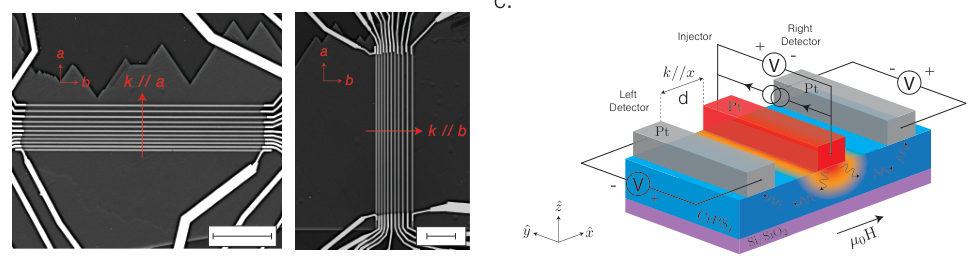

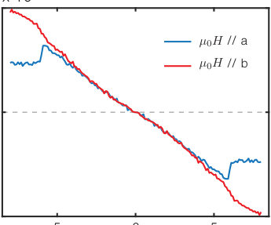
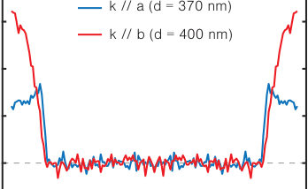
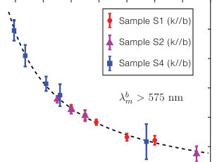
← Index · ← Previous · Next →
Authors: Amir Kalev
Type: theory · Category: other · PDF: https://arxiv.org/pdf/2608.11092v1
Analysis basis: full PDF text, analyzed in chunks
Topic relevance: quantum measurements 2/5
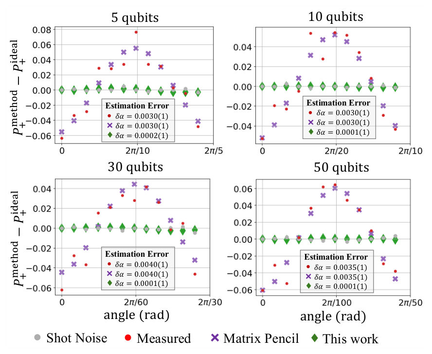
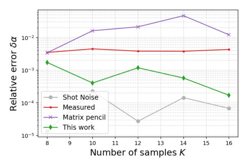
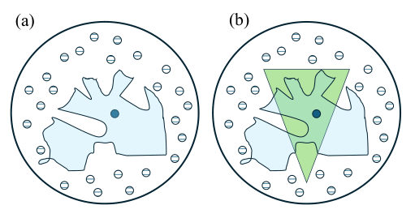
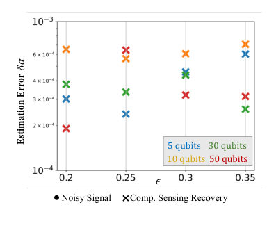
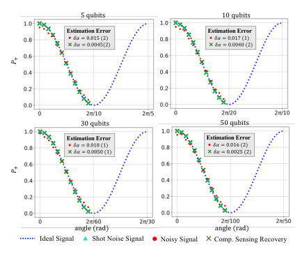
Summary. This paper introduces a framework to enhance quantum sensor performance by treating signal reconstruction as a convex optimization problem constrained by known physical properties of correlation functions. By enforcing Positive Semidefiniteness and Toeplitz structure, the method robustly recovers parameters from sparse or noisy data where standard techniques fail. This offers a practical, calibration-free way to improve measurements in challenging quantum regimes.
Why it may be interesting. It provides a concrete, data-driven methodology for extracting maximum information from limited experimental measurements in quantum systems by embedding fundamental physical symmetries into the reconstruction algorithm.
Main problem. Improving parameter estimation in quantum sensors when performance is degraded by noise, finite sampling, and implementation imperfections, especially in the data-starved regime.
Main result. Enforcing intrinsic physical constraints (Positive Semidefiniteness, Toeplitz structure, low-rank prior) during signal reconstruction significantly improves frequency estimation accuracy over standard spectral methods when data is sparse or noisy.
Method. The problem is formulated as a convex optimization program that reconstructs the two-time correlation function Gram matrix by minimizing an error functional subject to physical constraints.
Model / system. The work analyzes quantum sensors aiming for Heisenberg Limit precision, using the two-time correlation function of Hermitian observables (e.g., in GHZ-based magnetometry) as the diagnostic tool.
Key observables. Two-time correlation functions $G(t)$, frequency estimation error ($\delta\alpha$), and the reconstructed Gram matrix $\hat{G}$.
Important parameters / regimes. Data-starved regime (few time samples available), noise level ($\epsilon$), and the rank ($r$) of the underlying signal.
Assumptions / limitations. The core assumption is that physically valid correlation functions must be Positive Semidefinite, Toeplitz, and low-rank; the method assumes noise is bounded in $\ell_2$ norm over observed samples.
Figures summary. Figures demonstrate that PSD-constrained reconstruction significantly reduces estimation error variance compared to unconstrained methods (like matrix pencil) when data sampling is limited or imperfections are present.
Paper structure. The paper builds from the general problem of constrained signal recovery, applies it specifically to quantum metrology using GHZ states, and then rigorously compares its performance against established spectral estimation techniques across varying noise/sampling regimes.
Quantum sensors promise measurement sensitivities that can scale at the Heisenberg limit, but in practice their performance is often degraded by noise, finite sampling, and implementation imperfections. In this work we present a general framework for improving parameter estimation in such settings by exploiting intrinsic structural constraints of time-domain correlation functions. Our approach builds on the observation of Kemper et al. [PRL 132, 160403 (2024)] that two-time correlation functions of Hermitian observables generate Gram matrices that are positive semidefinite, a property that can be violated in experimentally acquired data. We formulate signal reconstruction as a convex optimization problem that enforces positive semidefiniteness, Toeplitz structure, and low-rank priors motivated by the underlying dynamics. We show analytically that, under suitable conditions, the ground-truth signal can be uniquely identified in the noiseless case and recovered stably in the presence of noise. We further demonstrate numerically, in a GHZ-based magnetometry protocol, that enforcing these physical constraints can significantly improve frequency estimation from sparse and noisy data. In particular, we observe a clear advantage in the data-starved regime, where only a small number of time samples are available and standard spectral estimation methods, including matrix pencil techniques, provide limited or unstable improvement over direct fitting. While the reconstructed signals do not in general reach the shot-noise-limited performance, the proposed approach consistently reduces estimation error and recovers much of the underlying structure of the signal. These results indicate that incorporating universal physical constraints into data analysis can enhance the practical performance of quantum sensing protocols without requiring additional hardware resources or calibration.
Authors: Yunkai Wang, Peixue Wu, Graeme Smith, Sisi Zhou
Type: theory · Category: quantum information and computing · PDF: https://arxiv.org/pdf/2608.10377v1
Analysis basis: full PDF text, analyzed in chunks
Topic relevance: quantum measurements 2/5
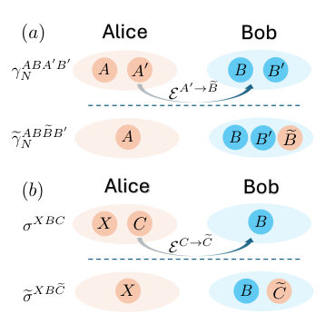
Summary. The paper establishes that 'private correlations' within a bipartite quantum state act as a quantifiable resource for enhancing distributed quantum sensing. It proves this by showing that positive private information guarantees a lower bound on the achievable local Fisher information, an advantage not shared by classical correlations alone.
Why it may be interesting. This work provides rigorous theoretical tools for quantifying quantum resources beyond standard measures like entanglement or mutual information, directly linking fundamental correlations (private information) to practical sensing limits in noisy channels.
Main problem. The research aims to determine if an operational, information-theoretic quantity of a noisy quantum state can certify a non-trivial lower bound on its sensing capability in distributed scenarios.
Main result. Positive private correlations in the encoding basis are proven to constitute a metrological resource that certifies a quantitative lower bound on the locally accessible sensing Fisher information when assisted by an auxiliary channel.
Method. The authors use theoretical quantum information measures, specifically comparing private information ($P_X$) against entanglement and classical correlation bounds, applied within a framework of parameter estimation using LOCC Fisher information.
Model / system. The study analyzes bipartite or tripartite quantum states ($\sigma_{XBC}^{ heta}$) shared among parties (Alice, Bob) undergoing parameter estimation ($ heta$). The model incorporates the concept of an assisting channel ($C$) to enhance sensing performance.
Key observables. Private correlations (positive private information $P_X$), Locally accessible Fisher information ($F_{ ext{LOCC}}$), and Global Quantum Fisher Information ($F_Q$).
Important parameters / regimes. Noise parameters ($\lambda, p$), system dimension ($d$), encoding strength ($N$), and the existence/value of positive private information.
Assumptions / limitations. The analysis assumes a non-degenerate encoding Hamiltonian ($H_X$) and relies on specific channel formulations (e.g., erasure or depolarizing channels) for assistance.
Figures summary. Figures illustrate different state formulations, including data-hiding examples and general state structures ($\sigma_{XBC}^{ heta}$), used to demonstrate the resource quantification.
Paper structure. The paper develops from an initial example showing private correlations improving sensing over mere distillable key capacity. It then proves a general theorem linking positive private information to a lower bound on $F_{ ext{LOCC}}$ after assistance, contrasting this with classical correlation bounds and analyzing the reduction to entanglement when no assisting channel is present.
We show that private correlations in a bipartite quantum state constitute a metrological resource for distributed sensing assisted by a possibly noisy channel from one party to the other. We begin with an example with distillable secret key but poor locally accessible sensing performance and show that an assisting channel substantially improves its performance. We then prove a general theorem showing that positive private information in the encoding basis certifies a quantitative lower bound on the locally accessible sensing capability after assistance. We further show that classical correlations alone provide no analogous guarantee, whereas, in the absence of the assisting subsystem, the privacy-based guarantee reduces to an entanglement-based one. Finally, in a channel formulation, we show that a channel with positive private information allows nonzero locally accessible sensitivity when paired with a suitable assisting channel.
Authors: Roo Dunnill, Mina Doosti
Type: theory · Category: quantum information and computing · PDF: https://arxiv.org/pdf/2608.11187v1
Analysis basis: full PDF text, analyzed in chunks
Topic relevance: quantum measurements 2/5
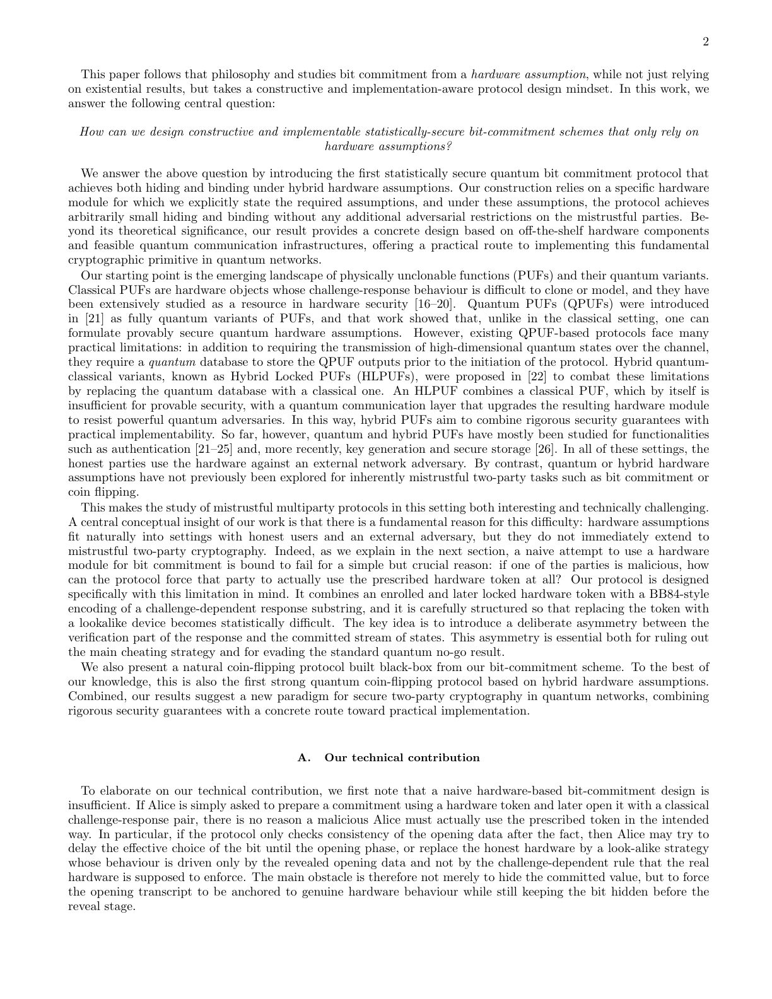
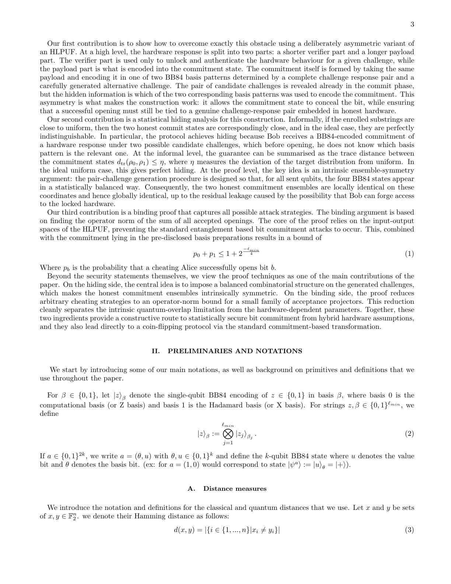
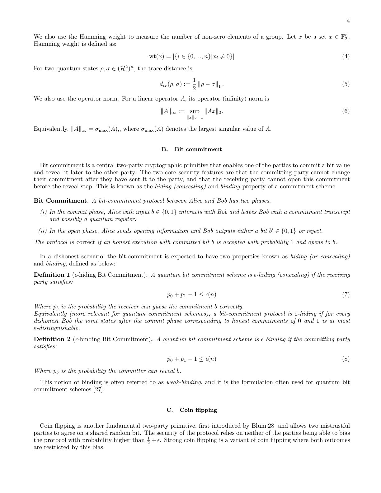
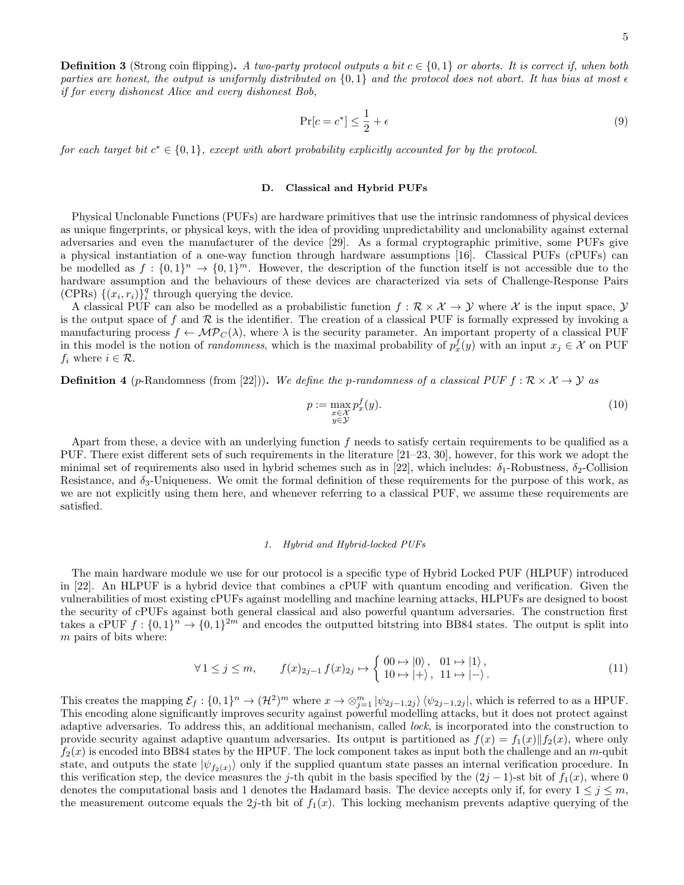
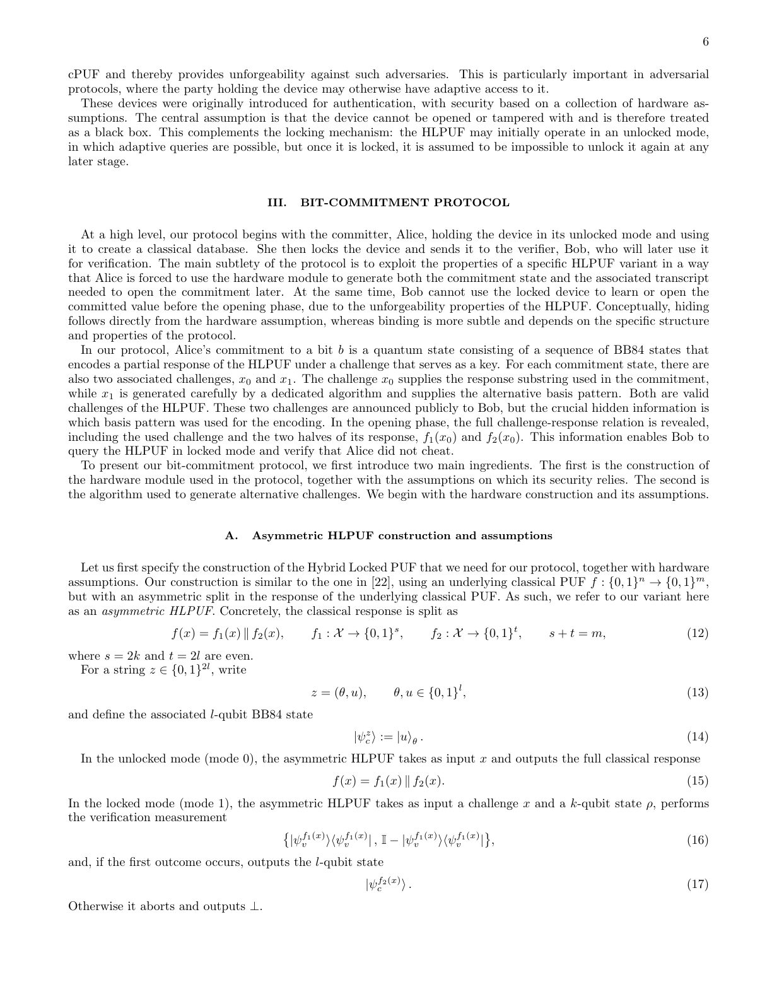
Summary. This paper develops constructive protocols for statistically secure bit commitment and coin flipping using Hybrid Locked Physical Unclonable Functions (HLPUFs). By integrating classical hardware tokens with quantum communication, the authors overcome previous impossibility results. This work suggests a new paradigm for building practical, hardware-anchored cryptographic primitives in quantum networks.
Why it may be interesting. While focused on cryptography, the reliance on physical hardware assumptions (HLPUFs) provides a tangible link between abstract quantum information theory and potential near-term quantum device implementations, which is relevant for understanding resource constraints in quantum networks.
Main problem. The primary goal is to construct statistically secure bit commitment and coin flipping protocols that overcome theoretical impossibility results in quantum cryptography.
Main result. The authors successfully achieve statistical security for both bit commitment and coin flipping by basing the protocol on Hybrid Locked Physical Unclonable Functions (HLPUFs).
Method. The construction uses a novel, non-trivial combination of classical hardware tokens and quantum communication within the HLPUF structure to enforce security guarantees.
Model / system. The core physical model is the Hybrid Locked Physical Unclonable Function (HLPUF), which combines classical PUFs with quantum encoding into BB84 states. The security analysis involves bounding operator norms and trace distances between candidate commitment states.
Key observables. Statistical hiding ($ ext{dtr}( ho_0, ho_1) \le \eta$) and binding probability bounds ($p_0 + p_1 \le 1 + 2 / 2^{s-\ell_{\min}/2}}$).
Important parameters / regimes. The security depends on the parameters of the HLPUF, including $\ell_{\min}$ (qubit register size) and $s$ (related to encoding length), as well as the bias $\delta_r$.
Assumptions / limitations. Security relies on natural assumptions about the underlying HLPUF hardware primitive and its resistance to tampering once locked.
Paper structure. The paper develops the protocol by first establishing the necessary security bounds (hiding/binding) using the HLPUF structure, followed by deriving the concrete probability bounds through mathematical analysis of projector operators and finally applying these results to derive the coin-flipping bias.
Bit commitment is impossible to achieve with unconditional security, even in quantum cryptogra- phy. We show that statistically secure bit commitment, satisfying both hiding and binding, can be constructed from hybrid locked physical unclonable functions (HLPUFs), a hardware primitive that combines classical hardware tokens and quantum communication. Our protocol uses these hardware assumptions in a novel and non-trivial way to achieve the first mistrustful two-party cryptographic protocol based on hybrid hardware modules. We prove statistical hiding and binding under natu- ral assumptions on the HLPUF and using a carefully designed challenge generation algorithm as a subroutine of our bit-commitment protocol. The construction also yields the first hardware-based coin-flipping protocol. Our results suggest a new paradigm for secure two-party cryptography in quantum networks, combining rigorous security guarantees with a concrete route toward practical implementation.
Authors: Krishnaraajan Sundararajan, Muhammad Zohaib, Yulia Kreminska, Sytze H. Tirion, Bart J. van Wees
Type: experiment · Category: other · PDF: https://arxiv.org/pdf/2608.10802v1
Analysis basis: full PDF text, analyzed in chunks
Topic relevance: analog quantum simulation 1/5 · correlated / nonlocal dissipation 1/5 · quantum measurements 1/5




Summary. This work experimentally demonstrates that crystal anisotropy strongly controls magnon spin transport in $ ext{CrPS}_4$. By measuring nonlocal magnetotransport signals, the authors quantify direction-dependent properties like conductivity and diffusion length. The findings establish intrinsic crystalline structure as a powerful tool for designing next-generation magnonic devices.
Why it may be interesting. While focused on condensed matter magnetism, the study of spin transport dynamics and engineered directional responses in crystalline materials provides a solid experimental platform for understanding energy/momentum channeling effects relevant to quantum devices.
Main problem. The study investigates how crystal anisotropy dictates the direction-dependent transport properties of magnon spin currents in van der Waals magnets.
Main result. Pronounced anisotropic magnon spin conductivity and diffusion lengths were observed when using electrically generated magnons, confirming that intrinsic crystalline anisotropy is a key control parameter for magnonic device engineering.
Method. The research employs nonlocal magnetotransport measurements (both first- and second-harmonic resistance) on patterned Platinum strips deposited on the $ ext{CrPS}_4$ antiferromagnet.
Model / system. The physical system is the monoclinic van der Waals antiferromagnet $ ext{CrPS}_4$. The analysis utilizes magnon spin diffusion models incorporating anisotropic exchange couplings ($J_1, J_2, J_3$) and measures transport along crystallographic $a$ and $b$ axes.
Key observables. Magnon spin conductivity ($\sigma_m$), magnon spin diffusion length ($\lambda_m$), nonlocal first-harmonic resistance ($R_{NL}^{1\omega}$), and nonlocal second-harmonic resistance ($R_{NL}^{2\omega}$).
Important parameters / regimes. Temperature (e.g., 25 K, 15 K), magnetic field strength (up to 8 T), and crystallographic direction ($\hat{a}$ vs $\hat{b}$).
Assumptions / limitations. Electrically generated magnon transport is preferred over thermal excitation for isolating intrinsic anisotropy effects; extracting $\lambda_m$ from thermal measurements is complicated by temperature gradients.
Figures summary. Figures illustrate the crystal structure and device geometry, showing how Pt electrodes are patterned along $a$ and $b$ axes. Results plot nonlocal resistances versus magnetic field or separation distance to quantify directional differences.
Paper structure. The paper establishes the theoretical framework for anisotropic magnon diffusion, details the experimental setup using nonlocal magnetotransport measurements on $ ext{CrPS}_4$, presents quantitative comparisons between electrical and thermal excitation regimes, and concludes by emphasizing anisotropy control.
Crystal anisotropy provides a powerful route for realizing direction-dependent transport in solid-state systems. While its influence on electronic transport is well established, the role of anisotropy in magnon spin transport in van der Waals magnets is largely unexplored. Here, in a nonlocal geometry, utilizing the monoclinic van der Waals antiferromagnet CrPS$_4$, we observe pronounced anisotropy in both electrically and in thermally excited magnon spin transport. Electrically generated magnons exhibit a magnon spin conductivity at least 2.2 times larger and a spin diffusion length at least 2.7 times longer for transport along the crystallographic-b axis compared to the crystallographic-a axis, where $λ_m^{a} \sim$ 211 nm and $λ_m^{b} \geq$ 575 nm. In comparison, at 8T, we find the nonlocal second-harmonic resistance associated with thermally excited magnons to be $\sim$7 times larger along the crystallographic-b axis at 25K. We further show that a magnon spin diffusion length cannot be reliably extracted from the nonlocal second-harmonic resistance, owing to the extended temperature profile within CrPS$_4$. Likewise, we show that the anisotropy in the spin Seebeck coefficients cannot be reliably estimated from the thermally excited magnon spin transport alone, as it is intertwined with the anisotropic heat conductivity of CrPS$_4$. Utilizing the electrically generated magnon spin transport, we demonstrate that intrinsic crystalline anisotropy serves as an effective control parameter for tuning magnon spin transport, opening new avenues for magnonic device engineering.
Authors: ChunJun Cao, Gong Cheng, Alexander Jahn, Thomas Koutsikos
Type: theory · Category: other · PDF: https://arxiv.org/pdf/2608.10085v1
Analysis basis: full PDF text, analyzed in chunks
Topic relevance: analog quantum simulation 1/5 · correlated / nonlocal dissipation 1/5 · quantum measurements 1/5
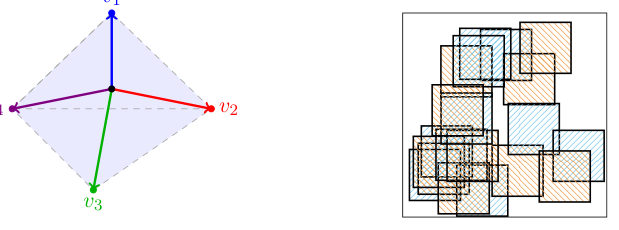
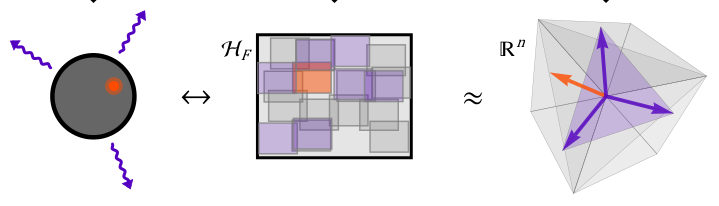
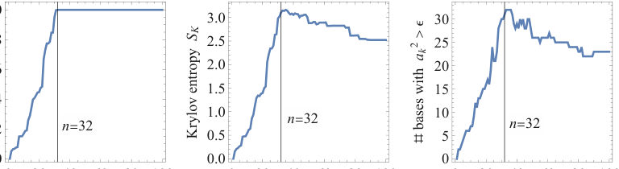
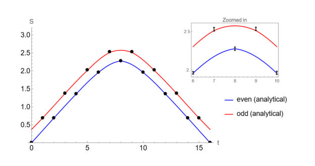
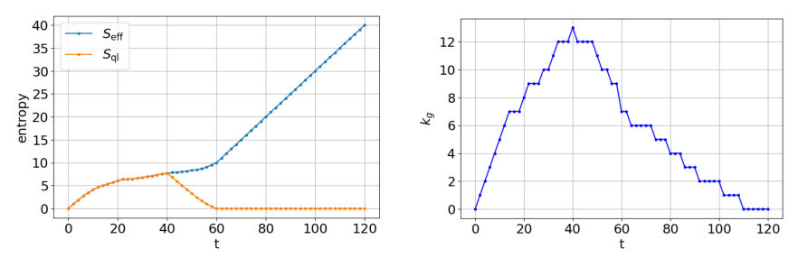
Summary. This paper develops a toy model using 'overlapping qubits' to address the black hole information paradox. By allowing operators corresponding to interior and exterior regions to only approximately commute, the authors circumvent no-cloning violations and demonstrate that entropy calculations correctly recover the Page curve. This provides an intriguing quantum information perspective on reconciling unitarity with gravitational collapse.
Why it may be interesting. While focused on gravity, the use of overlapping operators and state compression maps ($\mathcal{N}_C$) provides a concrete, mathematically rigorous framework for handling approximate symmetries or near-factorizations common in complex many-body systems where exact tensor product descriptions fail.
Main problem. The paper addresses reconciling quantum unitarity with black hole evaporation paradoxes, specifically by modeling how information is preserved across an event horizon while respecting principles like complementarity.
Main result. By constructing a toy model using 'overlapping qubits,' the authors show that accounting for operator overlaps allows the entropy calculation to recover the expected Page curve, suggesting a mechanism for unitary evolution.
Method. The core method involves defining operators (qubits) that only approximately commute ($\sim O(\epsilon)$), which circumvents strict Hilbert space factorization and avoids apparent violations of no-cloning theorems.
Model / system. The system is a toy model of an evaporating black hole, mathematically realized using overlapping qubits derived from overlapping Majorana fermions. This framework allows for quasi-local degrees of freedom that mimic the structure expected in quantum gravity regimes.
Key observables. Page curve recovery (entropy calculation), fidelity between compressed states ($F$), and the overlap parameter ($\epsilon$).
Important parameters / regimes. The small overlap parameter $\epsilon$, the number of fundamental degrees of freedom $n$, and the number of overlapping qubits $N$.
Assumptions / limitations. The model is explicitly a 'toy model'; it relies on weak interdependencies ($\epsilon$) leading to approximate factorizations, and later sections assume Gaussian states for fidelity analysis.
Figures summary. Figure 1 illustrates the analogy between fitting overlapping vectors in $\mathbb{R}^n$ and constructing overlapping qubits. Figure 7 shows the exponential decay of state fidelity with Hamming distance and the scaling relationship between this decay rate and the ratio $N/n$.
Paper structure. The paper progresses from establishing the physical problem (black hole complementarity) to introducing the mathematical tool (overlapping qubits via fermions). It then develops techniques for analyzing overlaps in quantum states, culminating in fidelity calculations that confirm the expected scaling behavior.
We construct a toy model of an evaporating black hole using approximately local degrees of freedom acting on overlapping" qubits in which a version of black hole complementarity arises naturally. The operators corresponding to the radiation and the interior are identified as two distinct representations of the same fundamental algebra, thereby preventing the exact factorization of the Hilbert space into interior and exterior and avoiding the conventional no-cloning violations. We show how this toy model captures several qualitative and quantitative features of black hole evaporation and how the ability to account for thisoverlap" in the entropy calculation leads to the recovery of a Page curve.
Authors: Juan F. Pedraza, Le-Chen Qu
Type: theory · Category: other · PDF: https://arxiv.org/pdf/2608.10072v1
Analysis basis: full PDF text, analyzed in chunks
Topic relevance: analog quantum simulation 1/5 · driven-dissipative phase transition 1/5 · non-equilibrium universality 1/5
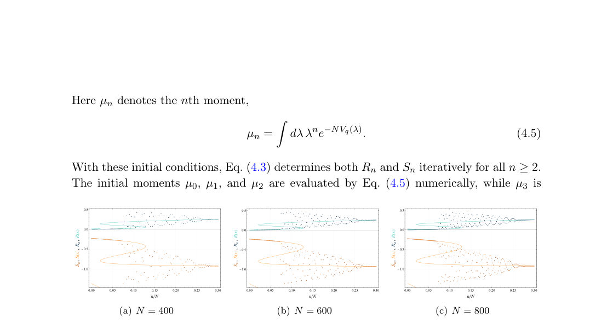
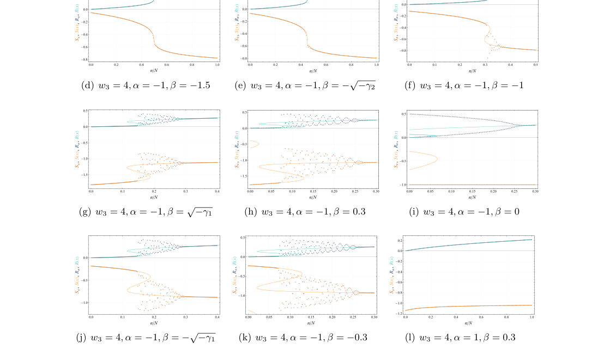
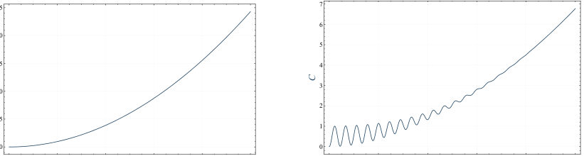
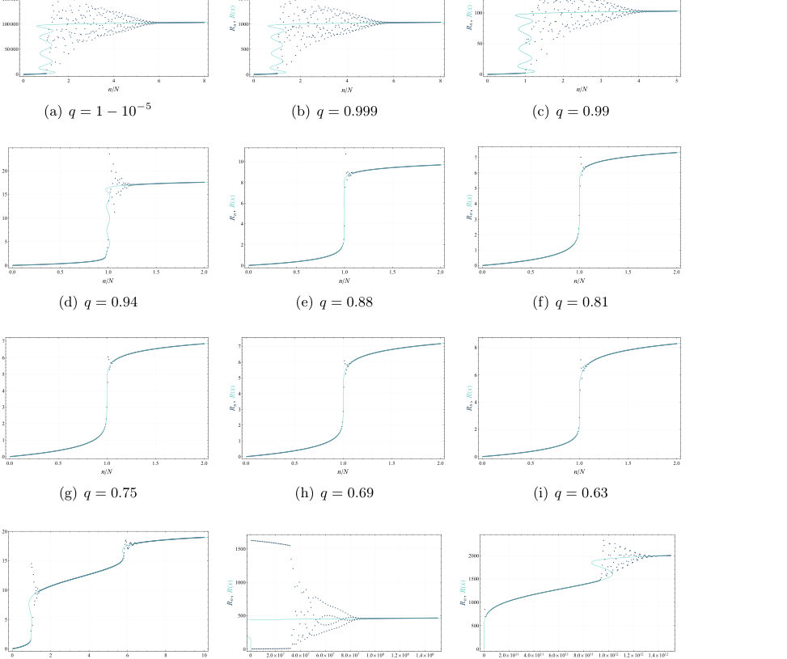
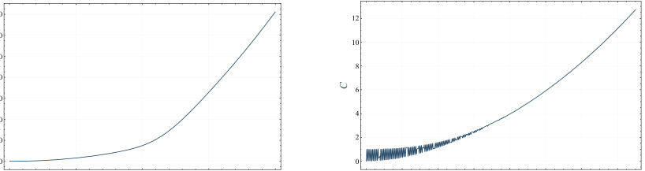
Summary. This paper develops a powerful method using moment recursion to analyze the behavior of orthogonal polynomial coefficients in random matrix models with asymmetric potentials. By studying the large-$N$ asymptotics, they link mathematical features like 'gradient catastrophes' to physical concepts such as chaotic transition regions in models like DSSYK. This provides deep insights into how spectral properties encode complex quantum dynamics.
Why it may be interesting. While focused on RMT, the connection between spectral properties (recursion coefficients) and dynamical indicators like complexity/chaos makes it relevant to understanding quantum dynamics in complex systems.
Main problem. The study focuses on analyzing the recursion coefficients of orthogonal polynomials and their associated Krylov dynamics within random matrix models featuring high-degree or asymmetric polynomial potentials.
Main result. The authors derived large-$N$ asymptotic behaviors for these coefficients, showing that gradient catastrophes in the associated recursion functions correspond to 'chaotic' transition regions in the physical models studied.
Method. They employ a moment recursion method combined with recursive algorithms to efficiently construct and analyze the coefficients, connecting them to continuum string equations.
Model / system. The work applies to general random matrix ensembles defined by potentials $V(\lambda)$, specifically examining an asymmetric quartic potential and the double-scaled Sachdev-Ye-Kitaev (DSSYK) model.
Key observables. Recursion coefficients ($R_n, S_n$), the recursion function, gradient catastrophes, and spread complexity $C(t)$.
Important parameters / regimes. The degree of the potential, asymmetry parameters ($w_3, w_2, w_1$), and the scaling variable $x=n/N$.
Assumptions / limitations. The analysis relies on treating the discrete string equation as an initial value problem or using moment calculations for high degrees.
Figures summary. Numerical results confirm that the discrete coefficients approach the derived continuum functions ($R(x), S(x)$) as $N$ increases, illustrating the large-$n/N$ behavior.
Paper structure. The paper develops the moment recursion method for high-degree potentials, derives the continuum string equations for the quartic potential, analyzes the asymptotic limits of the coefficients, and applies this framework to both the quartic model and the DSSYK model.
We study the recursion coefficients of orthogonal polynomials and their associated Krylov dynamics in random matrix models with high-degree and possibly asymmetric polynomial potentials. We develop a moment recursion method that, when combined with the recursive algorithm, provides an efficient construction of the recursion coefficients. We also obtain their large-$n$ asymptotic behavior for general asymmetric potentials; for $Nw_d=1$, the leading asymptotic form of $R_n$ reproduces Freud's conjecture. We apply this framework to an asymmetric quartic potential and to the double-scaled Sachdev-Ye-Kitaev (DSSYK) model. In both models, the recursion functions capture the overall qualitative behavior of the recursion coefficients, and the gradient catastrophes of the recursion functions are associated with ``chaotic'' transition regions in the recursion coefficients. For the quartic potential, such regions can occur in both $R_n$ and $S_n$, whereas the DSSYK model can exhibit multiple transition regions in $R_n$, with the recursion function remaining accurate in the smooth intervals between them. Finally, we compute the corresponding spread complexity and find that transition regions do not qualitatively modify its behavior, while a two branch structure produces early time oscillations followed by monotonic growth.
Authors: Xiang S. W. Huang, Bruno K. Saika, Satoshi Hamao, Yuki Majima, Yuki Settai, Hideki Matsuoka, Yuki M. Itahashi, Masato Sakano, Taro Nakajima, Shinichiro Seki, Yoshihiro Iwasa, Kyoko Ishizaka, Masaki Nakano
Type: experiment · Category: strongly correlated electrons · PDF: https://arxiv.org/pdf/2608.10574v1
Analysis basis: full PDF text, analyzed in chunks
Topic relevance: analog quantum simulation 1/5 · quantum measurements 1/5
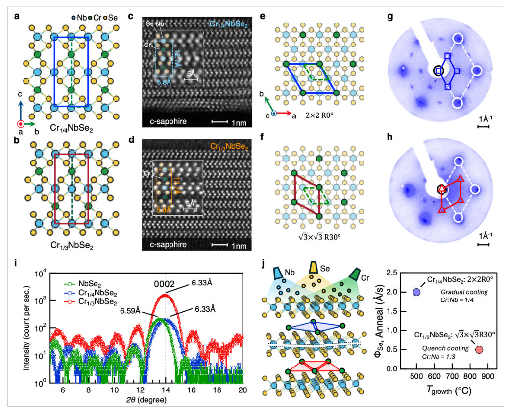
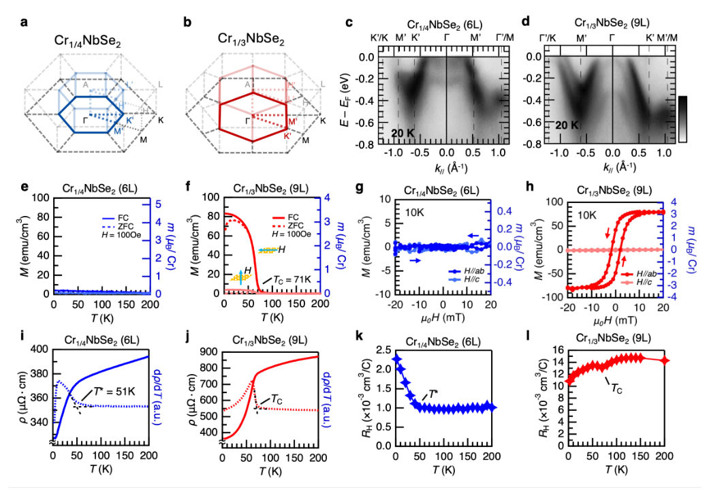
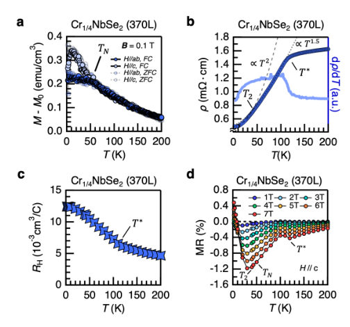
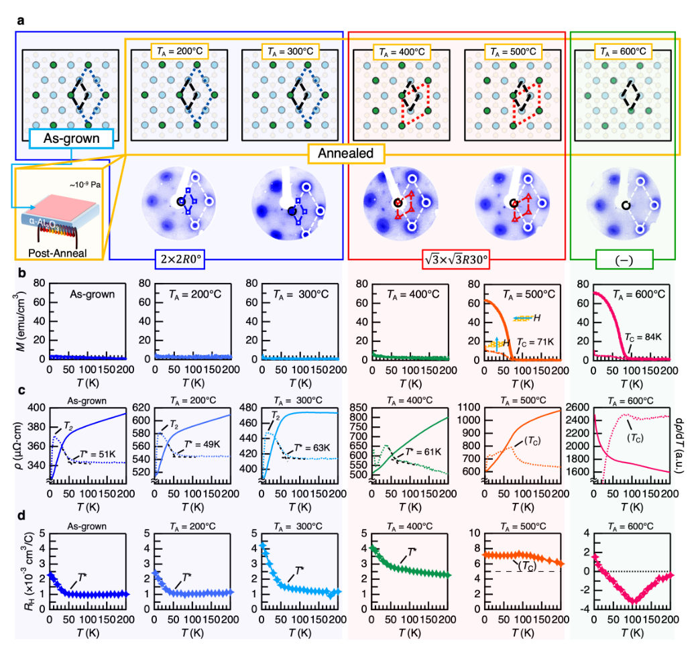
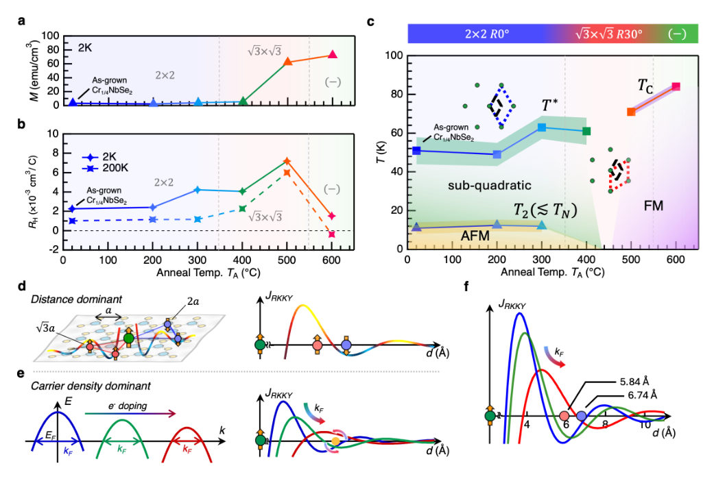
Summary. The research reports on creating an unprecedented material system ($ ext{Cr-NbSe}_2$) where the magnetic exchange interaction (RKKY) can be tuned by independently controlling both the atomic spacing of magnetic moments ($r$) and the carrier concentration ($k_F$). This is achieved using a combination of MBE growth for structural control and post-growth annealing for electronic doping, allowing precise study of carrier-sensitive magnetism.
Why it may be interesting. This work provides a highly controllable platform for studying fundamental many-body interactions like the RKKY coupling by decoupling its key parameters ($r$ and $k_F$) through epitaxial strain engineering and doping, which is crucial for understanding correlated electron physics in artificial heterostructures.
Main problem. To independently tune the moment-moment distance (r) and the Fermi wavevector (kF) in itinerant magnets governed by the RKKY interaction, which are typically coupled in bulk synthesis.
Main result. The authors successfully demonstrated carrier-sensitive RKKY magnetism in $ ext{Cr-NbSe}_2$ thin films by using MBE growth to fix the moment geometry and post-growth annealing to independently tune the carrier density.
Method. The study employs epitaxial thin film growth via Molecular-Beam Epitaxy (MBE) followed by controlled post-growth annealing, coupled with transport measurements like Hall effect and magnetization studies.
Model / system. The physical system is $ ext{Cr}_{1/x} ext{NbSe}_2$ in the form of epitaxial thin films grown on a single crystalline host ($ ext{NbSe}_2$). The RKKY interaction governs magnetism, depending critically on both the moment separation ($r$) and the carrier density (related to $k_F$).
Key observables. Hall response evolution, magnetic transition temperatures ($T_C$, $T_N$), resistivity ($ ho(T)$), and structural superstructures ($2 imes2R0^\circ$ vs $\sqrt{3} imes\sqrt{3}R30^\circ$).
Important parameters / regimes. Annealing temperature (tuning carrier density) and growth window selection (setting moment geometry $r$).
Assumptions / limitations. The ability to decouple the structural control ($r$) from the electronic doping/carrier tuning ($k_F$) via sequential MBE growth and annealing.
Figures summary. Figures illustrate RHEED patterns confirming superstructures, transport measurements showing systematic evolution of Hall response with annealing, and magnetization curves revealing magnetic transitions dependent on processing history.
Paper structure. The paper establishes the challenge (coupled $r$ and $k_F$), details the MBE/annealing methodology to create distinct phases, presents structural confirmation via RHEED/LEED, and finally uses transport/magnetic measurements across an annealing series to prove independent tuning of carrier-sensitive RKKY magnetism.
In itinerant magnets governed by the Ruderman-Kittel-Kasuya-Yosida (RKKY) interaction, the exchange coupling depends on both the moment-moment distance $r$ and the Fermi wavevector $k_{\mathrm{F}}$, yet in bulk synthesis the two are tightly coupled: a change in composition typically alters both. Here, we use a thin-film approach to tune these two variables independently in a single crystalline host. Using molecular-beam epitaxy (MBE), we stabilize either $2\times2\mathrm{R}0^\circ$ Cr$_{1/4}$NbSe$_2$ or $\sqrt{3}\times\sqrt{3}\mathrm{R}30^\circ$ Cr$_{1/3}$NbSe$_2$ within the same NbSe$_2$ host through separate growth windows. Controlled post-growth annealing performed across a series of temperatures then modifies the carrier density while leaving the Cr superstructure intact below a structural-transition threshold. The two as-grown phases are distinct in electronic structure, magnetic ground state, and transport. Along this annealing series, the Hall response evolves systematically while the magnetic response changes in a structurally insensitive manner, with ferromagnetic order emerging within the same $\sqrt{3}\times\sqrt{3}\mathrm{R}30^\circ$ structural class only above a critical annealing temperature, experimentally disentangling carrier density and moment geometry. The Hall magnitude and sign evolution point to a low-carrier-density system in which $k_{\mathrm{F}}$ is susceptible to modest external tuning. Cr-NbSe$_2$ thus realizes carrier-sensitive RKKY magnetism in a single crystalline host, within an MBE-plus-annealing approach extensible across the intercalated transition-metal dichalcogenide family.
Authors: Fellipe B. Carneiro, Zéetény Bacsó, Kevin Allen, Aly H. Abdeldaim, Rebecca Scatena, Jaime M. Moya, Roger D. Johnson, Emilia Morosan, Alessandro Bombardi
Type: experiment · Category: strongly correlated electrons · PDF: https://arxiv.org/pdf/2608.11070v1
Analysis basis: full PDF text, analyzed in chunks
Topic relevance: analog quantum simulation 1/5 · quantum measurements 1/5
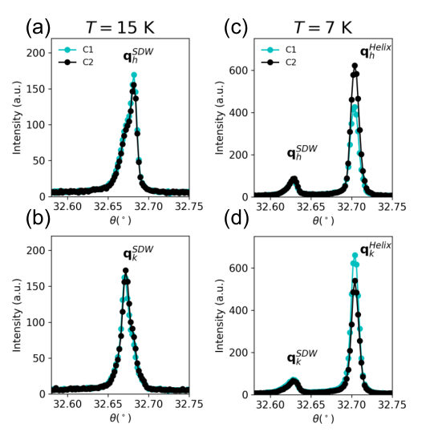
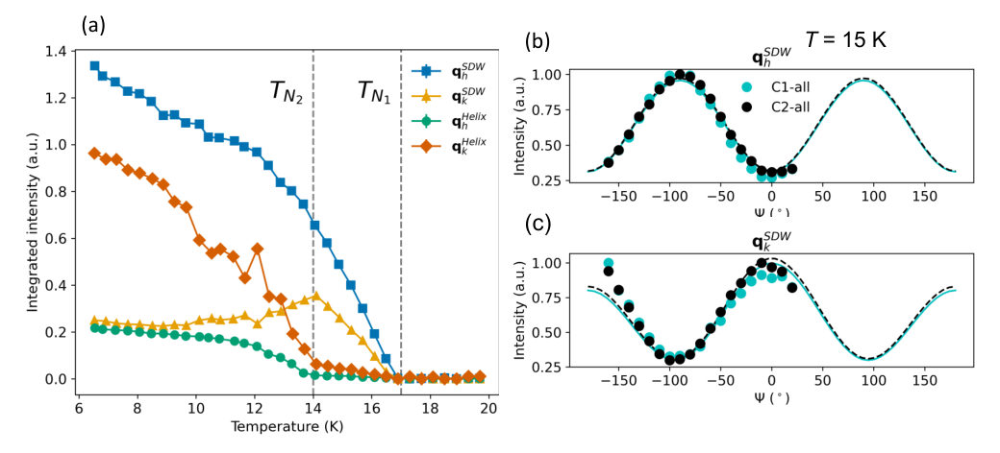
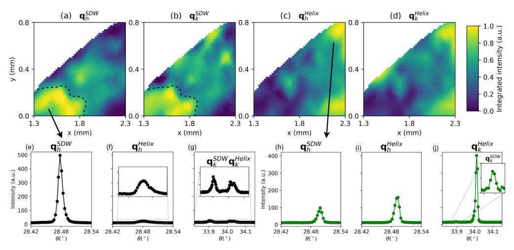
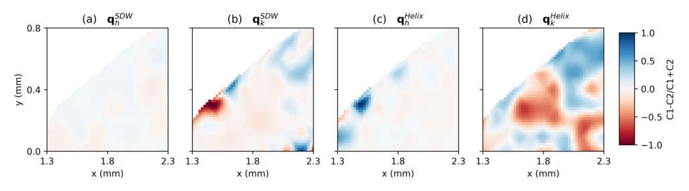
Summary. This work uses spatially-resolved REXS to characterize the magnetic spin textures in Eu(Al0.4Ga0.6)4. It reveals that the material is magnetically inhomogeneous, hosting coexisting orthogonal SDW and helical domains across different regions of the sample. The findings emphasize that local measurements are crucial for accurately describing the complex, competing magnetic ground states in these correlated materials.
Why it may be interesting. While focused on magnetism, the use of spatially resolved scattering techniques to map out competing ordered phases in a solid-state system provides an excellent model for studying complex ground states where local fluctuations dictate macroscopic behavior, relevant to correlated electron physics.
Main problem. The study investigates the spatial inhomogeneity of zero-field magnetic spin textures in Eu(Al0.4Ga0.6)4, aiming to distinguish between locally and globally averaged magnetic structures.
Main result. The material exhibits phase segregation into distinct domains hosting coexisting orthogonal spin-density-wave or helical states, confirming that the local magnetic texture varies significantly across the sample surface.
Method. Spatially-resolved Resonant Elastic X-ray Scattering (REXS) was employed using circular polarization to probe the symmetry and nature of the magnetic ordering.
Model / system. The physical system is Eu(Al0.4Ga0.6)4, a rare-earth intermetallic whose magnetism is governed by RKKY interactions. The research compares theoretical expectations for collinear SDW versus non-collinear helical states.
Key observables. Magnetic satellites at specific q-vectors (e.g., q_SDWh, q_Helixk), contrast between opposite circular polarizations (C1 vs C2), and temperature dependence of scattering intensity.
Important parameters / regimes. Two distinct magnetic transitions observed at T_N1 = 17 K and T_N2 = 14 K; the spatial variation across a 0.8 - 1 mm area is critical.
Assumptions / limitations. The primary assumption challenged by the work is that spatially averaged measurements accurately represent the true magnetic ground state of such inhomogeneous materials.
Figures summary. Figures illustrate rocking curves showing contrast dependence on polarization at different temperatures, and temperature dependency plots tracking the intensity of various satellite reflections associated with SDW and helical phases.
Paper structure. The paper progresses by first identifying two distinct magnetic transitions corresponding to orthogonal q-vectors. It then uses REXS diagnostics (polarization/azimuthal scans) to differentiate between coexisting SDW and helical domains, ultimately concluding that local probes are necessary due to observed spatial variations.
Here, we use resonant elastic x-ray scattering (REXS) to investigate the inhomogeneity of the zero-field magnetic spin texture of Eu(Al$_{0.4}$Ga$_{0.6}$)$_4$. By using spatially-resolved REXS, we show that the two magnetic transitions at T$_{N1}$ = 17 K and T$_{N2}$ = 14 K originate from two nearly degenerate, yet distinct, orthogonal pairs of q-vectors. The corresponding phases are segregated spatially, such that one fraction of the sample comprises coexisting orthogonal spin-density-wave domains, while another fraction hosts coexisting orthogonal helical domains. Additionally, the helical state forms inversion domains indicating that the inversion symmetry is not broken prior the magnetic transition. Our results suggest that the magnetic state is single-q and revealed a large variation of spin textures across a 0.8 - 1 mm area of the sample surface. These results demonstrate clear differences between the locally and globally probed magnetic textures, typically assumed to be representative of the system as a whole, highlighting the importance of spatially-resolved probes for accurately describing the magnetic behavior of this class of materials.
Authors: Chengyun Hua, Tianran Chen, Isaac C. Ownby, Colin L. Sarkis, Garrett Granoth, Masaaki Matsuda, Jiaqiang Yan, Ho Nyung Lee, Jeongkeun Song, Yuya Shinohara, Masatomo Uehara, Jun Akimitsu, Oleksandr Prokhnenko, Eugen Weschke, Takeshi Egami, D. Alan Tennant
Type: both · Category: strongly correlated electrons · PDF: https://arxiv.org/pdf/2608.10228v1
Analysis basis: full PDF text, analyzed in chunks
Topic relevance: analog quantum simulation 1/5 · quantum measurements 1/5
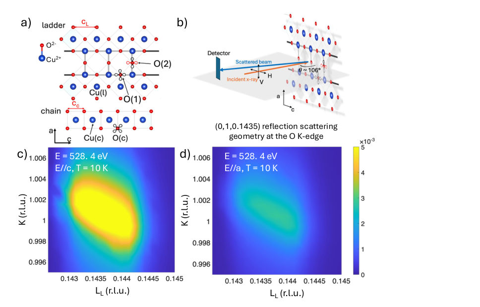
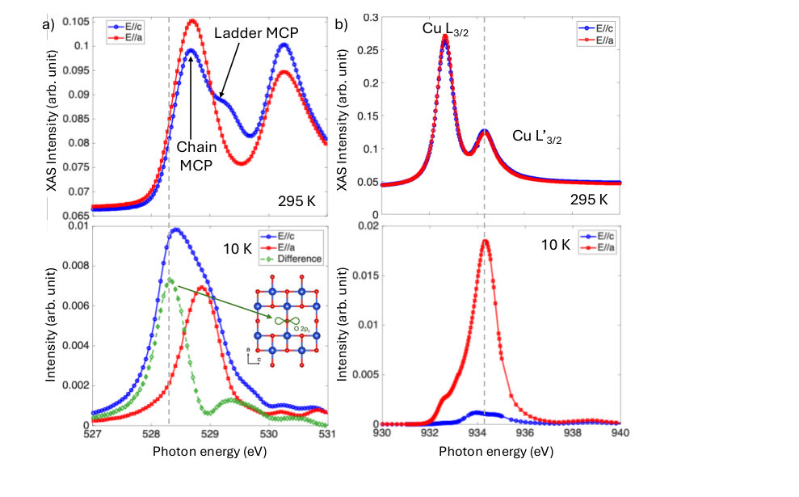
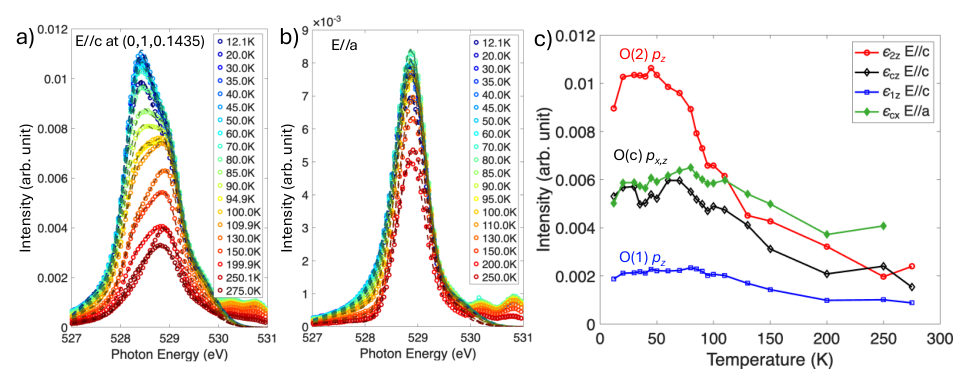
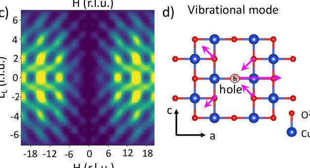
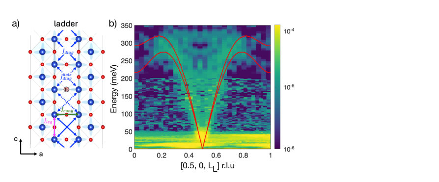
Summary. This paper uses advanced X-ray and neutron scattering techniques to investigate hole localization in cuprate ladders. It demonstrates that holes reside primarily in non-bonding oxygen $p\pi$ orbitals rather than forming standard Zhang-Rice singlets. This orbital selectivity suggests that the electronic structure requires models beyond simple copper-centric descriptions for understanding superconductivity.
Why it may be interesting. The work provides crucial experimental constraints on strongly correlated electron models, particularly by identifying an orbital degree of freedom (the $\pi$-band) that is decoupled from the primary magnetic exchange pathways, which is vital for understanding high-Tc superconductivity physics.
Main problem. The study challenges the conventional Zhang-Rice singlet (ZRS) framework by investigating the orbital character of doped holes in cuprate spin ladders.
Main result. Doped holes localize predominantly in planar, non-bonding O 2pz ($ ext{p}\pi$) orbitals on rung oxygen sites, which is distinct from conventional $\sigma$-bonded singlet states.
Method. The research combines polarization-dependent resonant soft X-ray scattering (RSXS) with inelastic neutron scattering (INS) measurements to probe orbital and lattice excitations simultaneously.
Model / system. The physical system is the spin-ladder cuprate $ ext{Sr}{14} ext{Cu}$. The analysis compares experimental findings against theoretical models, noting that conventional three-band Hubbard models are insufficient.} ext{O}_{41
Key observables. Orbital character of holes (via RSXS polarization dependence), anomalous diagonal stretching phonon (from INS), and the energy/intensity of specific X-ray resonances ($ ext{O}$ K-edge).
Important parameters / regimes. The doping level, temperature evolution of charge order, and the orbital symmetry ($p\pi$ vs $\sigma$-bonded) are key parameters.
Assumptions / limitations. The necessity of a multi-probe approach (RSXS + INS) is highlighted because single techniques provide only limited projections of the complex electronic state.
Figures summary. Figures illustrate the structure, polarization dependence of charge order reflections at the O K-edge, and temperature evolution of resonant intensities, alongside INS data showing anomalous phonon modes.
Paper structure. The paper progresses by identifying the limitations of existing models (ZRS), presenting multi-technique evidence (RSXS/INS) to pinpoint the orbital localization ($ ext{O}(2)$ $p\pi$), and concluding with a unified picture that requires reassessing hole pairing mechanisms.
The electronic structure of the spin-ladder cuprate Sr14Cu24O41 challenges the presumed universality of the Zhang-Rice singlet (ZRS) framework and models based exclusively on Cu-O hybridized orbitals. Combining polarization-dependent resonant soft X-ray scattering at the O K-edge with inelastic neutron scattering, we show that doped holes in the Cu2O3 ladders localize predominantly in planar non-bonding O 2pz (pπ) orbitals of rung oxygen sites rather than forming conventional ZRS states. Polarization-resolved RSXS uniquely identifies this orbital assignment, while lattice and magnetic excitations reveal its coupled consequences, establishing a unified microscopic picture that excludes the conventional σ-bonded singlet. This oxygen-sublattice charge order produces an anomalous diagonal stretching phonon and explains the absence of incommensurate magnetic fluctuations and anomalous magnon splitting. These findings motivate a reassessment of hole pairing in ladder cuprates and the sufficiency of copper-centric models for cuprate superconductors.
Authors: Maries Tahaab, Tim Chan, James Kirkman, Simon C. Benjamin
Type: both · Category: quantum information and computing · PDF: https://arxiv.org/pdf/2608.10576v1
Analysis basis: full PDF text, analyzed in chunks
Topic relevance: QC/QI experiment 1/5 · quantum measurements 1/5
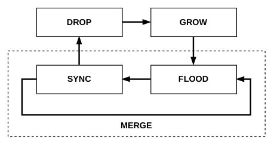
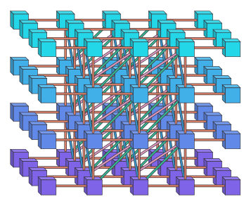
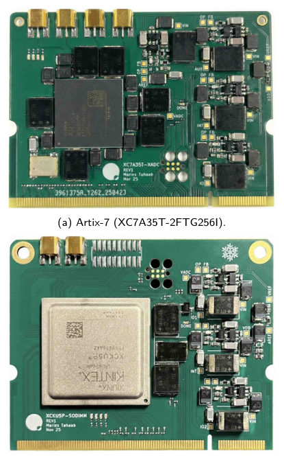
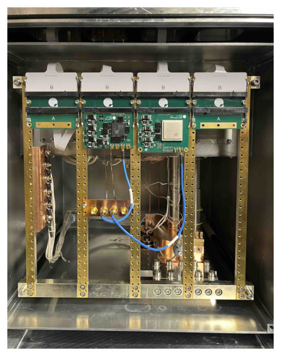
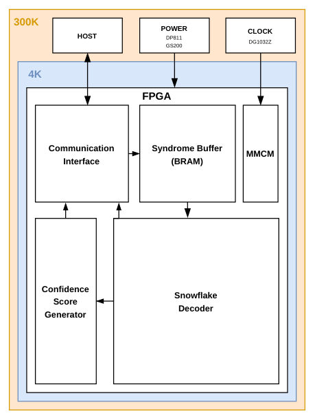
Summary. This paper presents a high-speed hardware implementation of the Snowflake decoder for quantum error correction codes, validating its performance at both room and cryogenic temperatures. The work successfully integrates confidence score calculation with minimal overhead, addressing key bottlenecks in fault-tolerant quantum computing. It also proposes architectural solutions to scale the system beyond current FPGA limitations.
Why it may be interesting. While focused on hardware implementation, the rigorous analysis of state propagation, cluster tracking, and error detection mechanisms within the decoding graph provides insights into complex dynamic systems that resonate with many-body physics modeling.
Main problem. The core challenge is achieving fast and accurate decoding of quantum error syndromes, which is critical for fault-tolerant quantum computation.
Main result. The authors demonstrated high decoding throughput using FPGA implementation at both room and cryogenic temperatures while incorporating confidence score calculation with negligible overhead.
Method. They implemented the streaming Snowflake decoder on commercial FPGAs, validating its performance across different temperature regimes and discussing architectural optimizations for large-scale deployment.
Model / system. The system models Quantum Error-Correcting Codes (QECCs), specifically focusing on the surface code. The decoding process involves a round-wise streaming algorithm that processes syndrome information via a 'drop-grow-merge' cycle.
Key observables. Decoding throughput, reaction time, decoder confidence scores (DCS), and resource utilization (LUTs, FFs) are key observables.
Important parameters / regimes. Code distance ($d$), operating temperatures (room vs. cryogenic), and the required inverse throughput ($\le 1 \mu s$).
Assumptions / limitations. The primary limitations discussed involve scaling to large code distances, necessitating alternative architectures that process 2D slices of the 3D decoding window.
Figures summary. Figures illustrate schematics of the Snowflake decoder for surface codes, contrasting full graph structures with proposed 2D distributed hardware implementations. Other figures detail the cryogenic measurement setup and state transition diagrams for the decoding cycle.
Paper structure. The paper details the necessity of fast decoding, presents the streaming Snowflake algorithm (using drop-grow-merge cycles), validates its implementation on FPGAs at different temperatures, discusses resource scaling limitations, and proposes an alternative 2D slicing architecture.
In fault-tolerant quantum computing, fast and accurate decoding is crucial. Snowflake is a decoder for the surface code that runs in a streaming fashion. In this paper, we implement Snowflake on commercial FPGAs and validate them at room and cryogenic temperatures. Our results demonstrate high decoding throughput for small code distances that, when extrapolated, remains within acceptable limits for larger distances. Further, we incorporate the calculation of certain decoder confidence scores with negligible overhead both in terms of latency and physical resource utilisation. We note that implementing a large-scale system would require either a large FPGA beyond today's technology or clusters of FPGAs connected via a high-speed bus. Thus, we discuss an alternative architecture that exploits the locality of Snowflake by processing 2D slices of the 3D decoding window and offloading segments of the 3D structure to a high-speed memory.
Authors: Theodor Misiakiewicz, Garrett G. Wen
Type: theory · Category: disordered systems and neural networks · PDF: https://arxiv.org/pdf/2608.10184v1
Analysis basis: full PDF text, analyzed in chunks
Topic relevance: driven-dissipative phase transition 1/5 · non-equilibrium universality 1/5
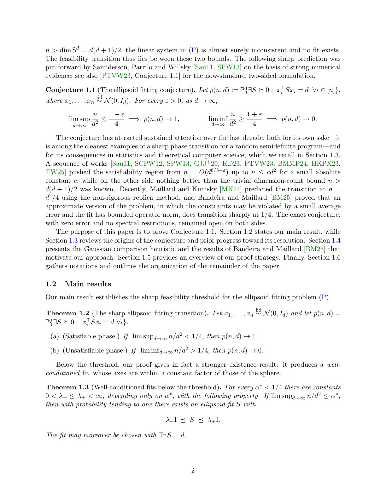
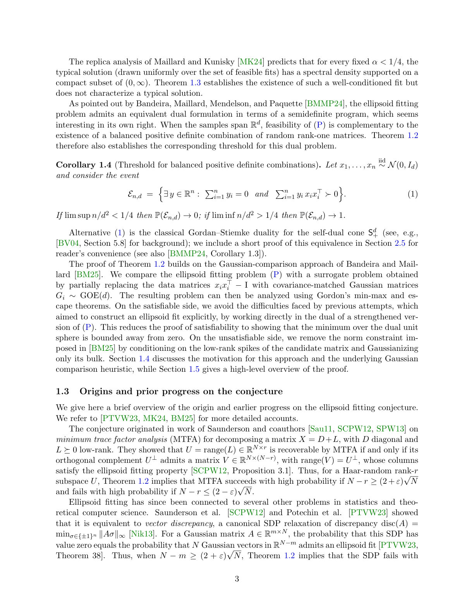
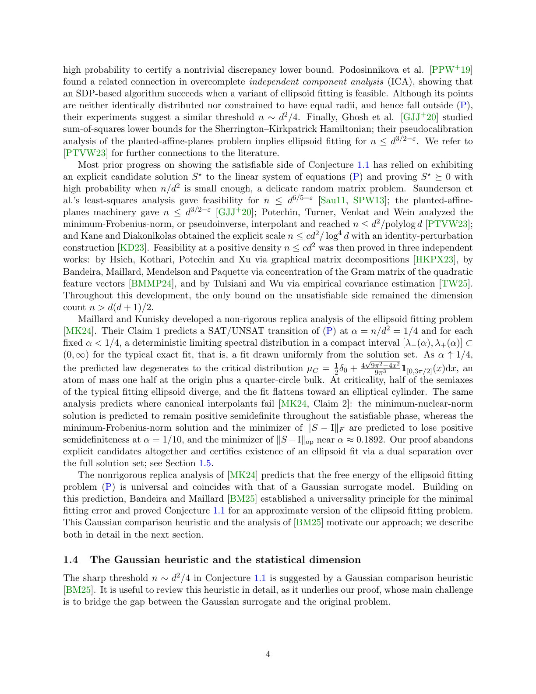
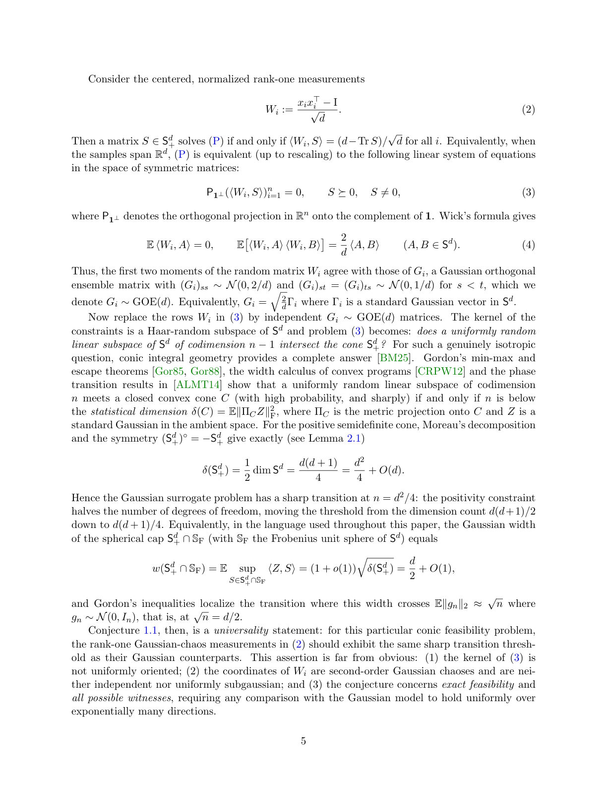
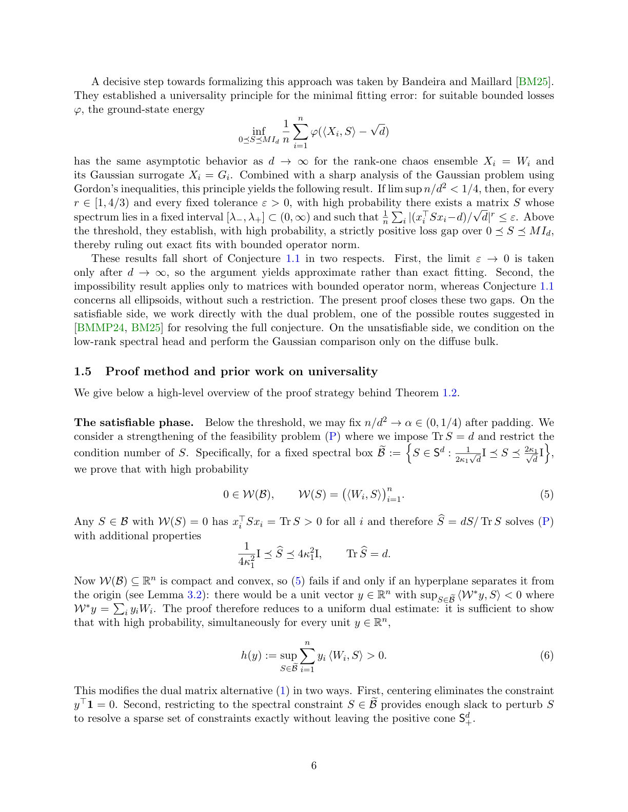
Summary. This paper rigorously proves the conjectured sharp phase transition for determining if an ellipsoid fit exists for random Gaussian vectors. The critical threshold is found at $n/d^2 = 1/4$, separating a regime where solutions are almost surely guaranteed from one where they are impossible. The work employs sophisticated tools from convex optimization and high-dimensional probability theory.
Why it may be interesting. The rigorous mathematical characterization of a sharp transition point in a high-dimensional geometric constraint problem is highly relevant to understanding generalization bounds and information capacity limits in complex learning models, which share structural similarities with disordered systems analysis.
Main problem. The paper determines the sharp phase transition threshold for the existence of an ellipsoid fit defined by random Gaussian vectors in high dimensions.
Main result. It proves that a feasible fit exists with high probability if $n/d^2 < 1/4$, and no fit exists if $n/d^2 > 1/4$.
Method. The proof employs advanced techniques including Gaussian-equivalence frameworks, head-tail decomposition of dual vectors, and projected Gordon escape arguments.
Model / system. The model involves finding a positive semidefinite matrix S such that all $n$ random Gaussian vectors $\mathbf{x}_i$ satisfy the constraint $\mathbf{x}_i^ op \mathbf{S}\mathbf{x}_i = d$.
Key observables. Feasibility probability $p(n, d)$, and the eigenvalues of the solution matrix S.
Important parameters / regimes. The ratio $\alpha = n/d^2$, with a critical threshold at $\alpha^* = 1/4$.
Assumptions / limitations. The analysis builds on Gaussian-equivalence principles and relies on asymptotic limits ($n, d o \infty$).
Paper structure. The paper establishes the problem formulation (SDP), proves the satisfiable phase ($\limsup n/d^2 < 1/4$) using dual analysis, and proves the unsatisfiable phase ($\liminf n/d^2 > 1/4$) using spectral decomposition and escape arguments.
Let $x_1,\ldots,x_n$ be independent standard Gaussian vectors in $\mathbb{R}^d$. An \emph{ellipsoid fit} is a matrix $S \succeq 0$ such that $x_i^\top S x_i =d$ for every $i$, so that all the points lie on the boundary of the centered ellipsoid $\{ x : x^\top S x = d\}$. Saunderson, Parrilo and Willsky conjectured that, as $n,d \to \infty$, this semidefinite feasibility problem undergoes a sharp transition at $n \sim d^2/4$. We prove this conjecture. If $\lim \sup n/d^2 = α^* <1/4$, then, with probability tending to one, an ellipsoid fit exists; moreover, one can choose $S$ with all eigenvalues in a fixed interval $[λ_- , λ_+] \subset (0,\infty)$ depending only on $α^*$. Conversely, if $\lim \inf n/d^2 > 1/4$, then, with probability tending to one, no ellipsoid fit exists, without any spectral restriction. Our proof builds on the Gaussian-equivalence framework developed by Bandeira and Maillard (2025) and closes the two gaps left open in their work: establishing exact fitting and removing the operator-norm constraint. On the satisfiable side, the new ingredients are a head-tail decomposition of the dual vector, exact correction of the sparse head constraints, and a Gaussian comparison principle for the low-influence tail. On the unsatisfiable side, we split a candidate into a low-rank spectral head and a Schatten-3 diffuse bulk, Gaussianize the bulk conditionally on the head, and apply a projected Gordon escape argument. The threshold is governed by the statistical dimension $d(d+1)/4$ of the positive semidefinite cone.
Authors: Zhongze Guo, Bei Xu, Qiang Gu
Type: theory · Category: other · PDF: https://arxiv.org/pdf/2608.10563v1
Analysis basis: full PDF text, analyzed in chunks
Topic relevance: analog quantum simulation 1/5 · quantum measurements 1/5
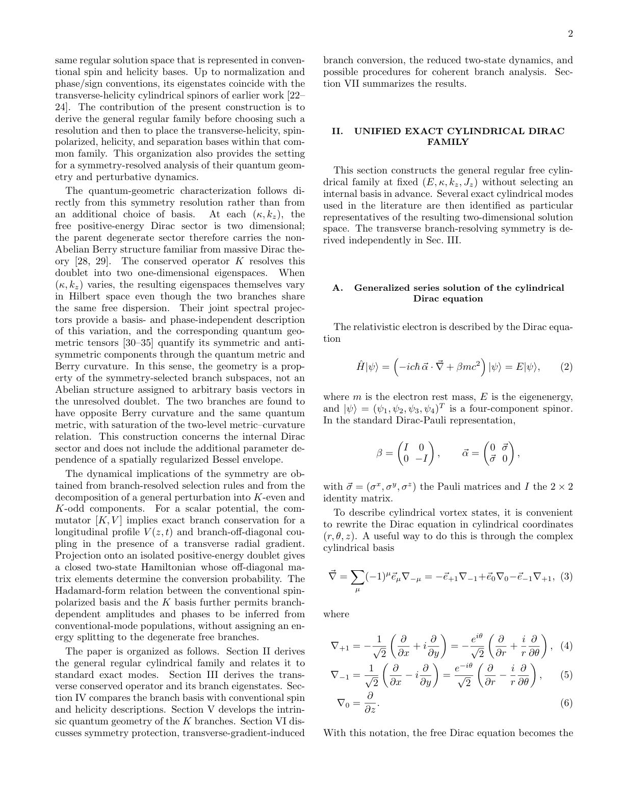
Summary. This paper develops a unified theoretical framework for solving the Dirac equation in cylindrical symmetry, showing that multiple physical descriptions map onto one general solution space. By analyzing conserved operators, they resolve the system into two distinct branches characterized by opposite Berry curvatures but shared geometry. This connects mode classification, quantum geometry, and dynamical selection rules for relativistic fermions.
Why it may be interesting. This work provides a rigorous mathematical framework for classifying single-particle states in curved or constrained geometries (like cylinders), which is foundational knowledge applicable to effective Hamiltonians used in AMO physics and quantum field theory simulations.
Main problem. To derive a general, unified exact solution for the free Dirac equation in axially symmetric cylindrical coordinates and to analyze its internal quantum geometry.
Main result. The analysis establishes that various known basis sets (spin-polarized, helicity) are embedded within one common solution space, which possesses two symmetry-defined branches with opposite Berry curvatures but a shared quantum metric.
Method. The authors use separation of variables and generalized series expansions to solve the coupled first-order Dirac equation. They then employ conserved transverse operators to resolve the residual doublet into distinct symmetry-defined subspaces for geometric analysis.
Model / system. The system is a relativistic fermion described by the free Dirac equation in cylindrical coordinates, applicable to physical scenarios like electron vortices or rotating matter. The Hamiltonian is analyzed at fixed energy and momenta.
Key observables. Berry curvature, quantum metric, branch conversion probabilities, and symmetry-resolved dynamics.
Important parameters / regimes. Energy (E), transverse momentum ($\kappa$), longitudinal momentum ($p_z$), and total angular momentum ($J_z$).
Assumptions / limitations. The analysis focuses on the positive-energy sector and assumes axial symmetry. The final dynamical analysis is restricted to perturbations that respect or break the conserved transverse operator K.
Paper structure. The paper first derives the general solution form encompassing multiple known bases, then uses a conserved transverse operator to split the positive-energy sector into two branches. Finally, it analyzes how perturbations couple these branches, revealing geometric properties and selection rules.
Exact cylindrical solutions of the free Dirac equation provide natural single-particle modes for a broad class of axially symmetric relativistic fermion systems, including electron vortices, twisted-particle scattering, rotating matter, and cylindrical field quantization, but are commonly formulated in different internal bases. We derive the general regular positive-energy cylindrical solution at fixed energy, transverse and longitudinal momenta, and total angular momentum, and show how the commonly used spin-polarized, separation, helicity, and transverse-helicity modes are embedded in the resulting two-dimensional solution space. A conserved transverse operator resolves the residual doublet into two symmetry-defined branches. Their parameter-dependent eigenspaces admit a gauge-invariant quantum-geometric characterization, with opposite Berry curvatures, a common quantum metric, and saturation of the two-level metric--curvature relation. We further derive symmetry constraints on branch conversion and the corresponding reduced two-state dynamics. The resulting framework connects mode classification, symmetry resolution, quantum geometry, and dynamics across distinct cylindrical Dirac settings.
Authors: Hans A. Kösel, Roland Ewert, Jan W. Delfs
Type: theory · Category: quantum information and computing · PDF: https://arxiv.org/pdf/2608.10809v1
Analysis basis: full PDF text, analyzed in chunks
Topic relevance: quantum measurements 1/5
Summary. This paper proposes a quantum algorithm to solve the Poisson equation using techniques like the Quantum Fourier Transform and the Hockney method. It compares two circuit implementations for diagonal matrix multiplication, finding trade-offs between ancilla qubit requirements and success probability. The work confirms the potential of quantum computation for PDEs but cautions that current non-QFT steps limit overall runtime efficiency.
Why it may be interesting. It demonstrates a direct application of advanced quantum algorithms (QFT, controlled gates) to solve a classical PDE problem, providing benchmarks for quantum simulation feasibility in physics applications.
Main problem. The paper addresses solving the Poisson equation, $\nabla^2\varphi(\mathbf{x}) = S(\mathbf{x})$, which is a fundamental problem in fields like CFD.
Main result. A quantum algorithm utilizing the Quantum Fourier Transform (QFT) and the Hockney method was developed to solve this equation for both periodic and free field boundary conditions. While QFT offers efficiency gains, other necessary algorithmic steps limit the overall runtime performance.
Method. The core methodology involves mapping the differential equation into Fourier space, applying the QFT, performing a matrix multiplication in the transformed domain (using LCU or multi-controlled rotations), and then applying an inverse transform. The Hockney method extends this to free field conditions.
Model / system. The model is the Poisson equation itself, applied to scalar fields $\varphi$ governed by a source term $S$. The quantum implementation uses amplitude encoding for state representation and relies on QFT circuits.
Key observables. Success probability of obtaining the desired ancilla qubit subspace; the solution function $\varphi(\mathbf{x})$ itself, compared against analytical solutions.
Important parameters / regimes. The resolution (number of discretization points $N$) used for simulating test cases in 1D and 2D.
Assumptions / limitations. For free-field problems, the Hockney method is employed to extend periodic boundary solutions. The efficiency analysis notes that non-QFT steps diminish overall runtime performance despite QFT's advantage over classical methods.
Figures summary. Figures illustrate quantum circuit schematics (Fig. 2) and show simulation results comparing computed real/imaginary parts of the solution $\phi$ against known analytical solutions for both periodic and free-field test cases (Figs. 16, 17, 18).
Paper structure. The paper first establishes the mathematical background by deriving solutions using Fourier Transforms for both periodic and free fields, detailing the role of the Hockney method. It then presents the quantum algorithm structure involving QFT and diagonal matrix multiplication, followed by detailed verification through state vector simulations on 1D and 2D test examples.
For the often encountered problem of the Poisson equation, this work presents a quantum algorithm solving it based on the quantum Fourier transform (QFT) for periodic boundary conditions as well as free field conditions, where the latter is realized via the Hockney method. Besides the QFT and an initialization procedure for amplitude encoding, the algorithm just uses a procedure for multiplying the state vector by a diagonal matrix w.r.t. amplitude encoding. For the latter, two alternative implementations are considered here. The first variant is a version of the LCU method and the second is a sequence of multi-controlled rotation gates that represents a factoring of the multiplied values into absolute values and complex phase factors. The functionality of the algorithm is verified via comparing the results obtained from state vector simulations for one- and two-dimensional test examples with their analytical solutions. For the considered test examples, it is found that the success probability for obtaining the desired ancilla qubit subspace in the LCU version is a factor of around two higher than that for the sequence of multi-controlled rotation gates. However, the LCU version requires a number of ancilla qubits up to the number of qubits that is set to store the discretized source term of the Poisson equation in amplitude encoding, whereas the sequence of multi-controlled rotation gates demands only one ancilla qubit. Computations of the success probabilities for both variants furthermore indicate that the success probability converges for a specific problem with increasing resolution. Concerning the required computational resources for the quantum algorithm, the conclusion is drawn that while the QFT is a more efficient procedure than its classical counterpart, the current implementations of the other necessary steps in the algorithm diminish the efficiency w.r.t. the runtime.
Authors: Ziao Tang, Chengkai Zhu, Ge Bai, Xin Wang, Ranyiliu Chen
Type: theory · Category: quantum information and computing · PDF: https://arxiv.org/pdf/2608.11139v1
Analysis basis: full PDF text, analyzed in chunks
Topic relevance: quantum measurements 1/5
Summary. This theoretical paper establishes a sharp boundary (threshold) for four-player XOR games concerning the equivalence between two models of quantum correlation: those defined by commuting operators and those admitting perfect Greenberger–Horne–Zeilinger (GHZ)-equatorial strategies. The authors prove that this threshold is exactly four active questions per player, using advanced algebraic geometry and formal proof techniques.
Why it may be interesting. It provides a rigorous, mathematically deep characterization of when non-local quantum correlations implied by specific game structures can be perfectly simulated using only local measurements on a highly entangled state like the GHZ state.
Main problem. The paper determines the sharp local-question threshold for when a four-player XOR game's commuting-operator value ($\omega_{co}(G)=1$) guarantees a perfect Greenberger–Horne–Zeilinger (GHZ)-equatorial realization.
Main result. Four is established as the sharp threshold: games with $\le 3$ questions per player must have a perfect GHZ-equatorial strategy if $\omega_{co}(G)=1$, but this fails for some game with four questions per player.
Method. The analysis reduces the problem to analyzing phase equations derived from the GHZ state and uses advanced mathematical tools like primitive circuits, forest matchings, and ternary Hamming geometry to prove algebraic equivalences between different correlation models.
Model / system. The model is a four-player binary XOR game defined by clauses and questions. The analysis compares correlations achievable via tensor-product strategies versus those constrained by commuting operators on a single Hilbert space (GHZ state).
Key observables. Commuting-operator value ($\omega_{co}(G)$), perfect MERP strategy existence, and the phase equations derived from the GHZ state.
Important parameters / regimes. The number of active questions per player ($k$), specifically testing $k=3$ versus $k=4$.
Assumptions / limitations. The proof relies on lifting abelian obstructions to ordered non-commutative refutations and utilizes formal verification in Lean 4.30.0.
Figures summary. Figure 1 shows the core dependency graph for the Lean formalization, mapping theorems to their ingredients; Table 2 provides a statement-by-statement correspondence between manuscript results and Lean declarations.
Paper structure. The paper proceeds by establishing algebraic dualities relating perfect strategies ($\omega_{co}(G)=1$) to lattice conditions ($b \in L^{\perp}_E$ vs $b \in R^{\perp}_E$). It then uses geometric arguments (e.g., covering the cube with balls) and graph theory/algebraic techniques (Cayley matching classification) to prove the threshold result.
We determine the smallest number of active questions per player at which a four-player binary exclusive-or (XOR) game of commuting-operator value one need not admit a Greenberger--Horne--Zeilinger (GHZ) equatorial realization. Such a realization uses the four-qubit GHZ state and equatorial qubit observables, reducing perfect play to additive phase equations. We prove that every four-player XOR game with commuting-operator value one and at most three active questions per player has a perfect GHZ-equatorial strategy. Conversely, we construct a uniform eight-clause game with four active questions per player whose commuting-operator value is one but whose phase equations are inconsistent. Thus four is the sharp local-question threshold. The positive result follows by lifting every integral incidence obstruction to an ordered noncommutative refutation, using primitive circuits, forest matchings, and ternary Hamming geometry. For the separating game, a Klein four-group incidence relation obstructs the phase system, while an even-subgroup normal form and degree-one and degree-two Magnus coefficients exclude refutations of arbitrary length.
Authors: Evagoras Stylianou, Holger Boche
Type: theory · Category: quantum information and computing · PDF: https://arxiv.org/pdf/2608.10922v1
Analysis basis: full PDF text, analyzed in chunks
Topic relevance: quantum measurements 1/5
Summary. This paper develops advanced mathematical tools—specifically blockwise weight enumerators and linear programming bounds—to establish tighter constraints on the existence and dimension of pure disjoint quantum locally recoverable codes. By avoiding assumptions about stabilizer structure, it significantly expands the theoretical understanding of quantum error correction capabilities.
Why it may be interesting. This work provides powerful, non-stabilizer techniques to constrain the parameters of quantum error-correcting codes, which is fundamental knowledge for designing robust quantum computation protocols.
Main problem. The primary goal is deriving rigorous upper bounds for pure disjoint $(r, \delta)$-Quantum Locally Recoverable Codes (qLRCs) without relying on the assumption that the code possesses a stabilizer structure.
Main result. The authors establish a new Singleton-like bound and derive linear-programming upper bounds on the code dimension, which strengthen existing results for these quantum error-correcting codes.
Method. The methodology involves formulating local Knill–Laflamme conditions and introducing blockwise Shor–Laflamme and unitary weight enumerators. These enumerators are then analyzed using Linear Programming (LP) techniques.
Model / system. The study concerns quantum error correction codes defined by projectors acting on a tensor product Hilbert space, specifically focusing on the structure of local recovery operations across disjoint blocks of physical qudits.
Key observables. Blockwise Shor–Laflamme weight enumerators ($ ext{ASL}_i, ext{BSL}_i$) and blockwise Unitary weight enumerators ($ ext{AU}_S, ext{BU}_S$).
Important parameters / regimes. Code parameters include total length $n$, dimension $K$, minimum distance $d$, and local recovery parameter $\delta$.
Assumptions / limitations. The strongest bounds are derived under the assumption that the code is 'pure' (i.e., certain weight enumerators vanish for non-zero error patterns).
Paper structure. The paper builds from defining local recovery conditions to introducing blockwise weight enumerators, proving properties of these enumerators (like $ ext{ASL}_i = K ext{BSL}_i$), and culminating in the derivation of the Singleton-like bound via LP methods.
We study pure disjoint $(r,δ)$-quantum locally recoverable codes (qLRCs) without assuming a stabilizer structure. We formulate local Knill--Laflamme conditions for recovery from up to $δ-1$ erasures within a recovery block, and introduce blockwise Shor--Laflamme and unitary weight enumerators that capture how error weight is distributed across recovery sets. We establish several properties of these enumerators and use them to derive a Singleton-like bound that strengthens the known bound for disjoint $(r,δ)$-qLRCs under a purity assumption, as well as a linear-programming upper bound on the code dimension. These results provide a non-stabilizer, weight-enumerator-based approach to the study of pure disjoint $(r,δ)$-qLRCs.
Authors: H Olivares-Pilon, JC Lopez-Vieyra, AV Turbiner
Type: theory · Category: other · PDF: https://arxiv.org/pdf/2608.10695v1
Analysis basis: full PDF text, analyzed in chunks
Topic relevance: quantum measurements 1/5
Summary. This work tackles the calculation of energy spectra for Helium-like ions across varying nuclear charges Z by proposing two advanced methods: numerical simulation via the Lagrange Mesh Method, and a general interpolation formula. The key achievement is the interpolation formula, which successfully merges asymptotic expansions to provide extremely high accuracy (up to 14 s.d.) over the entire physically relevant range of Z.
Why it may be interesting. While focused on atomic structure rather than quantum information, the development of highly accurate extrapolation techniques using Padé approximants to bridge different asymptotic regimes (large Z vs. near a singularity $Z_B$) is mathematically sophisticated and relevant for modeling complex many-body systems where multiple physical limits must be connected.
Main problem. The primary goal is to calculate highly accurate energy spectra for Helium-like atomic ions as a function of the nuclear charge Z.
Main result. The authors developed a general, few-parametric interpolation formula that achieves 10-14 significant digits of accuracy across all physically relevant charges Z, complementing high-accuracy numerical results from the Lagrange Mesh Method.
Method. Two complementary methods are presented: (1) A highly accurate numerical solution using the Lagrange Mesh Method (LMM), and (2) An analytical interpolation formula based on matching $1/Z$-expansions at large Z and Puiseux expansions around a critical charge $Z_B$.
Model / system. The system is two-electron atomic ions (Helium-like sequence) governed by the non-relativistic Schrödinger equation. The Hamiltonian describes the Coulomb interaction between two electrons and the nucleus with charge Z.
Key observables. Energy eigenvalues ($E$) for various excited states of the helium-like sequence, such as $1s^2$, $2s$, and $3s$.
Important parameters / regimes. The nuclear charge Z is the primary variable. Key theoretical parameters include the second critical charge $Z_B$ (a singularity point) and the expansion order N used in the interpolation.
Assumptions / limitations. The analysis relies on matching asymptotic expansions ($1/Z$ at large Z, Puiseux near $Z_B$) to construct a meromorphic interpolation function. The non-relativistic approximation is used, though relativistic effects are noted for very high Z.
Figures summary. Figures illustrate the energy vs. Z dependence for several states, comparing LMM results against fits derived from the proposed interpolation formula.
Paper structure. The paper introduces the physical problem and Hamiltonian, details two solution approaches (LMM and Interpolation), presents mathematical derivations involving $1/Z$ and Puiseux expansions, and concludes by validating the combined interpolation method across multiple excited states.
Two alternative approaches for studying Helium-like atomic ions in non-relativistic quantum mechanics are proposed: (I) a numerical approach, based on the Lagrange-mesh method which can easily reach up to 14-15 significant digits in the energy spectrum for any nuclear charge $Z$ with modest CPU time in single processor mode and (II) a highly-accurate, few-parametric interpolation formula for the energies {\it vs.} $Z$. The interpolation formula of general nature is proposed, it can be applied to the energies of any excited state of the helium-like sequence. It is based on matching the $1/Z$-expansion at large $Z$ and the Puiseux expansion with integer and half-integer powers around the so-called second critical charge $Z_B$, introduced by F and D Stillinger (1969, 1974), confirmed by the present authors in 2019 for the ground state $1^1 S$, then revisited here, and extended to the excited states in the present work. For example for the first two spin-singlet $1^1 S$, $2^1 S$ and the first two spin-triplet $2^3 S$, $3^3 S$ states this interpolation formula with nine free parameters can reach an accuracy of 10-14 significant digits (s.d.) in the energies for any physically-relevant nuclear charge $Z$, giving absolute accuracy at large $Z$. Many results are obtained for the first time.
Authors: Reza Dastbasteh, Ruben M. Otxoa, Pedro M. Crespo, Josu Etxezarreta Martinez
Type: theory · Category: quantum information and computing · PDF: https://arxiv.org/pdf/2608.11160v1
Analysis basis: full PDF text, analyzed in chunks
Topic relevance: quantum measurements 1/5
Summary. This paper develops advanced techniques for constructing fault-tolerant quantum error correcting codes that support arbitrary Z-rotation logical gates. By extending the code switching protocol to new families of codes, such as those compatible with rotated surface codes, it significantly improves the theoretical feasibility and resource estimates for universal quantum computation beyond standard T-gate assumptions.
Why it may be interesting. This work directly advances the theoretical understanding of resource efficiency in quantum computation by providing pathways to implement non-Clifford gates (like arbitrary Z-rotations) using more general and potentially less resource-intensive coding schemes than previously established methods.
Main problem. The core problem is realizing a universal set of fault-tolerant quantum operations, specifically incorporating arbitrary Z-rotation logical gates (RZ(theta)), into existing quantum error correction frameworks.
Main result. The authors construct new classes of quantum color codes and $r$-orthogonal codes that support transversal RZ(theta) gates, extending the code switching protocol to these geometries.
Method. They utilize the doubling technique as a unified framework for constructing these codes and extend the code-switching method by incorporating fault-tolerant Z-rotation gate realization into protocols designed for rotated surface codes.
Model / system. The work focuses on quantum error correcting codes, including color codes and rotated surface codes. The goal is to encode logical qubits while maintaining high minimum distance ($d$) against noise.
Key observables. Minimum distance ($d$), qubit overhead (physical vs. logical), and the feasibility of fault-tolerant gate implementation (e.g., magic state preparation).
Important parameters / regimes. Arbitrarily large minimum distance, specific rotation angles $ ext{RZ}( heta)$, and physical qubit counts (e.g., 45 qubits for a demonstration).
Assumptions / limitations. The analysis relies on extending protocols previously limited to T-gate supporting color codes; the construction methods assume certain weight divisibility conditions are met.
Figures summary. No specific figure summaries were extracted, but the notes mention circuit diagrams illustrating S|+> preparation via code-switching between different code types.
Paper structure. The paper develops theory by first establishing new color codes using a doubling technique to support RZ(theta) gates. It then generalizes this framework to $r$-orthogonal codes compatible with rotated surface codes, culminating in the extension of the fault-tolerant code switching protocol for these geometries.
A technique for realizing a universal set of fault-tolerant quantum operations is the code switching method, which leverages two quantum codes with complementary sets of transversal gates. To date, the application of this technique has been largely limited to families of color codes supporting a logical $T$ gate. No analogous code switching protocols exist for many other prominent families, such as rotated surface codes, or for finer $Z$-rotation gates. In this work, we first utilize the doubling technique as a unified framework to construct a class of quantum color codes encoding a single logical qubit with an arbitrarily large minimum distance, enabling the transversal realization of arbitrary small logical $Z$-rotation gates. We investigate the structural properties of this code family, demonstrating that they improve upon the parameters of state-of-the-art triorthogonal codes, achieve lower qubit overhead compared to certain known color codes, and admit single-shot decoding of $Z$-syndromes via meta-checks. Furthermore, we show that this framework extends beyond color codes; specifically, it enables the generation of $r$-orthogonal quantum codes, $r \ge 2$, that inherit the local geometry of rotated surface codes. We then provide an overhead optimization protocol alongside several candidate codes tailored for realizing logical $Z$-rotation gates within rotated surface codes. Finally, we extend the fault-tolerant code switching protocol based on transversal CNOT gates to incorporate fault-tolerant realization of $Z$-rotation gates at any level of the Clifford hierarchy for geometries compatible with rotated surface codes. We present the first demonstration of fault-tolerant magic state preparation by means of code switching within a distance-three rotated surface code using a total footprint of only 45 physical qubits, and evaluate its performance through a simulation.
Authors: Ming Yang
Type: theory · Category: quantum information and computing · PDF: https://arxiv.org/pdf/2608.11066v1
Analysis basis: full PDF text, analyzed in chunks
Topic relevance: quantum measurements 1/5
Summary. This work develops a formal framework to prove that certain advanced AI state-tracking tasks require fundamentally different amounts of memory and coordination resources depending on whether they are modeled classically or quantum mechanically. By establishing a 'semantic-compilation' theorem, the authors show provable separations—such as $\Omega(n^2)$ classical bits vs $n$ qubits for stabilizer contexts—highlighting genuine computational advantages beyond mere runtime speedups.
Why it may be interesting. It provides rigorous theoretical tools (resource counting $B, M, D$) to quantify when quantum memory resources offer an advantage over classical computational structures, even when those structures are embedded within complex AI/NLP interfaces.
Main problem. The paper aims to rigorously prove inference-time quantum coordination advantages for specific AI state-tracking tasks by comparing resource costs between classical and quantum computation models.
Main result. It establishes a boundary-preserving semantic-compilation theorem, demonstrating separations where tracking noncommuting latent states requires super-polynomial classical memory ($B+M$) compared to the polynomial qubit requirement of a quantum model.
Method. The authors use resource accounting based on communication ($B$), persistent memory ($M$), and local work ($D$) to derive lower bounds for classical simulators, contrasting these with upper bounds derived from quantum state dimensions.
Model / system. The core models involve general generative processes simulated by both classical finite-state machines (characterized by $B$ and $M$ bits) and quantum latent-state generators, particularly focusing on stabilizer contexts ($\mathcal{P}_{ ext{stab}}^n$).
Key observables. Resource costs $(B, M, D)$; the separation between required classical coordination bits ($B+M$) and necessary qubits.
Important parameters / regimes. The size of the system $N$ or $n$; the approximation factor $\epsilon$; the complexity measures like $ ext{KD}\epsilon_{ ext{cl}}$ and $ ext{K}_{\epsilon}^{q}$.
Assumptions / limitations. The quantum advantage is restricted to tasks exhibiting contextuality (noncommuting measurements); the stabilizer result assumes exact simulation and ideal noiseless quantum memory; the analysis requires adaptive completeness.
Paper structure. The paper builds from defining resource accounting for state-tracking, proving general lower bounds via a semantic-compilation theorem, applying this to specific QA/auditing tasks, and culminating in a strong separation proof using the stabilizer latent-state dialogue.
We prove inference-time quantum coordination advantages for specified AI state-tracking tasks. A solver compresses semantic history into a future-accessible boundary state and later answers a query. We count communication $B$, persistent instance-dependent memory $M$, and local work $D$; classical recurrence, caches, tools, and recomputation are allowed and charged. The central result is a boundary-preserving semantic-compilation theorem. It maps a finite one-way, streaming, or adaptive causal task into a semantic AI interface while preserving event order and access to past input. Classical boundary-state lower bounds and quantum-memory upper bounds transfer up to explicit compiler overhead, independently of the finite-precision recurrent architecture. Two applications have classical semantics. Matched-entity synopsis QA inherits the hidden-matching separation between $O(\log N)$ qubits and $Ω(\sqrt{N})$ classical boundary bits. Continual requirements auditing inherits a Max-$k$SAT streaming separation: a recurrent solver uses $O(\log^5 n\log(1/δ))$ qubits and polylogarithmic classical workspace to obtain a $0.7172$-approximation, whereas every classical one-pass finite-information solver attaining that ratio requires $Ω(\sqrt{n})$ coordination width. As a quantum-native compiler test, a stabilizer latent-state dialogue uses $n$ qubits, while every exact finite-state classical causal online realization satisfies $B+M \ge \frac{1}{2}n^2+(\frac{3}{2}-\log_2 3)n+O(1)$. The source protocols, streaming algorithms, and stabilizer witness are imported; the new result is their architecture-independent semantic transfer. These are memory and coordination separations, not runtime or empirical advantages for present-day language models. The stabilizer result assumes exact simulation and ideal noiseless quantum memory.
Authors: Lauritz van Luijk, Amine Marrakchi, Tobias Osborne, Alexander Stottmeister, Henrik Wilming
Type: theory · Category: other · PDF: https://arxiv.org/pdf/2608.10783v1
Analysis basis: full PDF text, analyzed in chunks
Topic relevance: quantum measurements 1/5
Summary. This theoretical paper establishes a profound connection between the physical notion of quantum steering and abstract mathematics via conditional expectations. It proves that steering is equivalent to the existence of a state-preserving map from one subsystem's algebra ($B'$) onto another ($A$). This result provides powerful tools for analyzing entanglement in complex systems where standard assumptions about local structure break down.
Why it may be interesting. It provides a deep mathematical characterization (via subfactor theory) for a physically intuitive concept (quantum steering), which has implications for understanding entanglement in complex, infinite quantum systems.
Main problem. The paper investigates which fundamental entanglement properties survive in quantum systems with infinitely many degrees of freedom where Haag duality fails. It aims to connect the operational concept of 'quantum steering' to abstract algebraic structures.
Main result. For a pure global state, quantum steering is mathematically equivalent to the existence of a state-preserving conditional expectation from the commutant $B'$ onto the algebra $A$.
Method. The proof involves establishing equivalences using ensemble decomposition properties and extending these arguments from general Jordan algebras to von Neumann algebras.
Model / system. The analysis uses commuting von Neumann algebras $A$ and $B'$, modeling systems where Haag duality fails, such as those found in topologically ordered systems or 1+1-dimensional conformal field theories.
Key observables. Quantum steering capability (operational), existence of a state-preserving conditional expectation ($E: B' o A$), and the index of the subfactor inclusion $[B':A]$.
Important parameters / regimes. The nature of the global state ($\omega$) is crucial, often restricted to pure states. The failure of Haag duality ($B' eq A$) defines the regime of study.
Assumptions / limitations. The analysis frequently restricts itself to pure global states and relies on advanced mathematical machinery from subfactor theory and operator algebras.
Figures summary. Figure 1 illustrates physical examples (like surface codes or CFTs) where Haag duality fails but a conditional expectation might still exist, emphasizing the need for careful state preservation checks.
Paper structure. The paper develops the equivalence by first defining steering operationally, then linking it to an 'ensemble extension property,' and finally proving this link is equivalent to the existence of the required state-preserving conditional expectation $E: B' o A$.
In systems with infinitely many degrees of freedom, fundamental results from quantum information theory can fail. An important example is the uniqueness of purifications: Even when two subsystems, described by commuting von Neumann algebras $A$ and $B$, are tomographically complete, purifications of a state on $A$ need not be related by unitaries in $B$. It was recently shown that this occurs precisely when Haag duality fails, i.e., when the commutant $B'$ is strictly larger than $A$. This raises the question of which fundamental entanglement properties survive in such a setting. We show that, for a pure global state, the ability to steer any ensemble decomposition of the marginal state on $A$ by measurements on $B$ is equivalent to the existence of a state-preserving conditional expectation from $B'$ onto $A$. This establishes a direct connection between quantum steering and subfactor theory. The key observation is that steering is equivalent to the existence of extensions of ensemble decompositions from $A$ to $B'$. Working with general Jordan algebras, we prove that unital positive maps have state-preserving left inverses if and only if ensemble decompositions can be lifted. For the inclusion $A\hookrightarrow B'$, a left inverse is precisely a conditional expectation, yielding the characterization above.
Authors: Satvik Singh
Type: theory · Category: quantum information and computing · PDF: https://arxiv.org/pdf/2608.11000v1
Analysis basis: full PDF text, analyzed in chunks
Topic relevance: quantum measurements 1/5
Summary. This theoretical paper establishes that the entanglement-assisted transmission capacity ($ ext{CE}$) acts as a strong upper bound for the classical identification capacity ($ ext{CID}$) over noisy quantum channels. While equality holds for low-noise regimes, the authors provide explicit counterexamples showing $ ext{CID} < ext{CE}$ for general channels, yielding new insights into the fundamental limits of quantum communication.
Why it may be interesting. The rigorous characterization of capacity bounds for information tasks like identification provides fundamental limits on what can be reliably communicated or detected using quantum resources, impacting the design of quantum communication protocols.
Main problem. The paper compares the classical identification capacity ($ ext{CID}$) with the entanglement-assisted transmission capacity ($ ext{CE}$) for quantum channels.
Main result. It proves that $ ext{CE}$ serves as a strong converse bound for $ ext{CID}$ ($ ext{CID} \le ext{CE}$), and demonstrates cases where this bound is strict, leading to the first example of superadditivity for $ ext{CID}$.
Method. The proof relies on advanced techniques including the Euclidean geometric method using Gaussian mean width, channel capacity definitions (classical vs. quantum), and constructing specific noisy channels.
Model / system. The study analyzes classical message transmission and identification over general noisy quantum channels $N: \mathcal{L}(A) o \mathcal{L}(B)$, exemplified by depolarizing and transpose-depolarizing qubits.
Key observables. Identification capacity ($ ext{CID}$), Entanglement-assisted transmission capacity ($ ext{CE}$), ordinary transmission capacity ($C$), and quantum identification capacity ($ ext{QID}$).
Important parameters / regimes. Noise parameters ($p, q$) characterizing the specific noisy channels used for testing the bounds.
Assumptions / limitations. The analysis assumes the existence of reliable coding schemes based on blocklength $n$ and relies on established quantum information theory frameworks.
Figures summary. Figure 3 compares various converse and achievability bounds, such as $ ext{CE}$ and $ ext{CID}$, for the qubit depolarizing channel $ ext{D}_p$ across different noise levels.
Paper structure. The paper first defines the relevant capacities ($ ext{CID}, ext{CE}$) by contrasting classical identification with standard transmission. It then establishes the universal strong converse bound ($ ext{CID} \le ext{CE}$), followed by constructing explicit channels where this inequality is strict, and finally discussing conditions under which equality holds.
Classical identification via a noisy channel is a communication task in which the receiver is not required to reconstruct the full transmitted message, but only to decide whether it coincides with a message of interest. This relaxation allows the number of identifiable messages to grow doubly exponentially with the blocklength. For quantum channels, the resulting (doubly exponential) identification capacity $C_{\mathrm{ID}}$ can strictly exceed the ordinary (exponential) transmission capacity $C$. In this paper, we prove that the entanglement-assisted transmission capacity $C_E$ is a strong converse bound for this task: $C_{\mathrm{ID}}\leq C_E$. For sufficiently low-noise channels, this bound can also be achieved via the Hayden-Winter (quantum) identification + fingerprinting codes. This yields an exact characterization $C_{\mathrm{ID}}=C_E$ of identification capacity for such channels. However, for general channels, we prove that this upper bound can be strict. We exhibit an explicit family of transpose-depolarizing channels for which $C_{\mathrm{ID}}
← Index · ← Previous · Next →